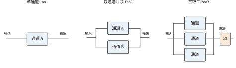
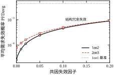
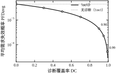
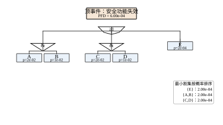
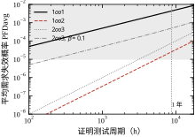
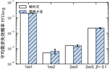

上一章讨论的是“多个主体各自优化时系统会停在哪里”。那一章隐含了一个更强的假设：所有设备都还在正常工作。控制器算得出、执行器动得了、传感器读得准，剩下的问题只是“怎么让它们配合得更好”。
现实里这个假设最先破。温度变送器会漂移、安全栅会烧、逻辑 solver 会死机、切断阀会卡在中位。功能安全要回答的不是“控制系统性能好不好”，而是“当这些环节坏掉时，被控过程还能不能停在安全状态”。 这两件事的评价体系几乎没有交集：一个跟踪误差 0.1% 的控制回路，可能在传感器断线时把一个放热反应送进失控；反过来，一个粗糙但带独立联锁的反应釜，能在同样故障下安然停车。
这一章把“坏了会怎样”拆成可计算的量：要多可靠、坏了多久能发现、发现后多久能恢复。 三个量分别对应 SIL 等级、诊断覆盖率与测试周期、平均修复时间与可用度。后面关于容错控制与安全仪表系统的章节，全部建立在这三个量的语言之上。
控制系统的常规评价是“给定输入，输出是否按要求变化”：超调多大、调节时间多长、稳态误差多少。这套评价默认系统是完好的，它衡量的是“设计得好不好”。
功能安全换了一个问法：给定一个故障，过程是否仍处于安全状态？ 它衡量的不是设计水平，而是故障发生后的后果。两个问法的差别可以用一句话概括：
性能问的是“正常时有多好”，安全问的是“异常时有多坏”。
工程上这两件事必须分开做，而且必须由不同的通道实现。反应釜的温度联锁不能复用温度控制回路的那支热电偶——因为控制回路坏了，联锁也跟着坏，这正是最需要联锁的时候。 这条“独立”要求不是官僚规定，它是从大量事故里总结出来的结构性结论。
功能安全的所有标准、表格与计算，最终都在回答三个问题。
第一，要多可靠？ 这是安全完整性问题：在需要动作的那一刻，安全功能失效的概率是多少。量化指标是平均需求失效概率 \mathrm{PFD_{avg}}，它被划分成 SIL1–SIL4 四档。这个量不是“设备好坏”的形容词，而是一个可以被计算、被验证、被审计的数字。
第二，坏了多久能发现？ 这是诊断与测试问题。未检出的危险失效会一直潜伏，直到下一次需求出现才暴露。潜伏期越长，平均失效概率越高。量化指标有两个：诊断覆盖率 DC（在线能发现多少）与证明测试周期 T（离线能兜住多少）。
第三，发现后多久能恢复？ 这是维修性问题。量化指标是平均修复时间 \mathrm{MTTR}，它与失效间隔一起决定可用度。安全性与可用性经常互相拉扯：越保守的联锁越安全，也越容易误停车。
三个问题构成一条链：可靠性决定“多久坏一次”，诊断与测试决定“坏了多久才知道”，维修性决定“知道后多久能好”。 缺任何一环，“安全”就只是一句口号。
设一台带夹套冷却的放热反应釜，正常工艺温度 85 ℃，联锁动作值 110 ℃，动作是切断进料并全开冷却水。假设做过放热失控实验：冷却水中断后，从 85 ℃ 升到 110 ℃ 约 8 min，从 110 ℃ 升到不可逆分解温度约 12 min。
安全功能的要求由此确定：
安全回路包含三部分：传感（温度变送器 TT-101）、逻辑（安全 PLC 的联锁程序）、执行（切断阀 XV-101 与冷却水阀）。 三者串联，任何一环失效，安全功能就失效。这个“串联”结构是后面所有计算的起点（§36.3.1）。
§36.2 建立词汇与公式：失效率、可靠度、可用度、冗余结构、失效分类、SIL/PL、共因失效、诊断覆盖率。§36.3 推导四类结构的 \mathrm{PFD_{avg}}，给出共因地板、故障树最小割集、FMEA 的量化用法。§36.4 讲离散实现：怎么把连续时间模型写成测试周期模型，怎么用解析、马尔可夫、蒙特卡洛三条路互相验证。§36.5 给工程边界：SIL 定级、七种不该上 SIS 的场合、软件与系统性失效。§36.6 用六组实验把每个公式跑一遍。§36.7 收口。
边界先划清，后面才好读。
其一，不推导任何控制算法。 PID 的整定与实现见第 44/106 章，MPC 的约束处理见第 58/80 章，Smith 预估见第 47/107 章。本章只关心“这些回路失效时的后果”，不关心它们正常时怎么工作。
其二，不做器件选型与接线设计。 什么型号的变送器、哪个品牌的卡件、端子怎么排——这些是详细设计阶段的工作，本章只给“要多可靠、要多独立”的输入条件。
其三，不给认证流程与文档模板。 第三方认证的申请、审核、发证是一套独立的程序，本章只讲“认证要看哪些数”。
其四，不覆盖信息安全。 SIS 被网络攻击导致失效，属于 IEC 62443 那条线，与本章的随机硬件失效是两套完全不同的方法论：一个讲“元件会坏”，一个讲“有人想让它坏”。两套都要做，但不能互相替代。
其五，不覆盖人因工程的完整方法。 §36.5.9 只讲“人的失效怎么进 LOPA 的账”，不讲控制室设计、报警管理、班组配置——那些是另一门课。
一句话概括本章的边界：它只回答“一个安全功能有多可信”，不回答“这个功能该怎么实现”。 后者是后续容错控制与 SIS 章节的内容。
失效率 \lambda 定义为“在 t 时刻仍正常的设备，在下一单位时间内失效的概率”：
\lambda(t)=\lim_{\Delta t\to0}\frac{P(t<T_f\le t+\Delta t\mid T_f>t)}{\Delta t}.
工程上最常用的是常数失效率假设，此时寿命服从指数分布，可靠度为
R(t)=e^{-\lambda t}. \tag{36-1}
平均失效前时间随之是
\mathrm{MTBF}=\int_0^\infty R(t)\,\mathrm{d}t=\frac{1}{\lambda}. \tag{36-2}
单位换算必须先统一。 失效率常用 FIT（1 FIT =10^{-9}/h），\mathrm{MTBF} 常用年或小时。本章统一用“每小时”，1\ \text{年}=8760\ \text{h}。单位不统一是这类计算最常见的错误，而且错得很隐蔽：10^{-6}/h 与 10^{-6}/年差 8760 倍，恰好跨越两个 SIL 等级。
常数失效率假设对应浴盆曲线的中段（有用寿命期）。早期失效靠老化筛选剔除，耗损失效靠预防性更换规避，中间那一段才是 SIL 计算的对象。把浴盆曲线两端的问题塞进指数模型，是另一类常见错误。
可修复系统的核心指标是可用度，即“任意时刻设备处于可用状态的概率”。在“失效—修复”交替的简化模型下，
A=\frac{\mathrm{MTBF}}{\mathrm{MTBF}+\mathrm{MTTR}}=\frac{1/\lambda}{1/\lambda+\mathrm{MTTR}}. \tag{36-3}
可靠度与可用度是两个不同的量，混用会导致完全相反的结论。 可靠度是“一段时间内不出故障的概率”，单调下降；可用度是“长期看有多少时间能用”，是一个稳态比值。一个每 100 h 坏一次、每次 10 min 修好的设备，可用度高达 0.998，但它在任何一次 8 min 的需求窗口里都可能正好坏着。 安全功能关心的是后者——需求出现的那一刻它在不在，而不是长期平均。
把安全回路的三个环节画成串联框图，就得到最基础的可靠性模型：串联系统任一环失效则整体失效，其可靠度是各环可靠度之积。要提高可靠性，只能加冗余。
图 36-1 给出三种最常见的结构。

表 36-1 把四种结构放在一起比较。注意“误跳闸倾向”这一列——它经常被忽略，却是现场最痛的一项。
表 36-1 常见冗余结构的比较
| 结构 | 安全功能失效条件 | \mathrm{PFD_{avg}} 量级（T=1 年） | 误跳闸倾向 | 典型用途 |
|---|---|---|---|---|
| 1oo1 | 单通道失效 | 10^{-3} | 低 | SIL1、非关键联锁 |
| 1oo2 | 两通道同时失效 | 10^{-5} | 高（任一误动即停） | SIL3、高危险场合 |
| 2oo2 | 任一通道失效 | 10^{-3} | 低 | 高可用、低安全要求 |
| 2oo3 | 两通道及以上失效 | 10^{-5} | 很低 | SIL3、既要安全又要连续 |
| 2oo4 | 三通道及以上失效 | 10^{-6} | 很低 | SIL4、极关键场合 |
功能安全里所有失效被两个维度切开，形成四类（表 36-2）。这两个维度缺一不可：只分“危险/安全”会漏掉诊断，只分“检出/未检出”会漏掉方向。
表 36-2 失效的四分类
| 类别 | 含义 | 对安全功能的影响 | 典型处理 |
|---|---|---|---|
| \lambda_{DD} | 危险、可检出 | 直接削弱安全功能，但能及时报警 | 在线诊断 + 定期维修 |
| \lambda_{DU} | 危险、不可检出 | 潜伏，直到需求出现才暴露 | 证明测试（周期 T） |
| \lambda_{SD} | 安全、可检出 | 导致误跳闸，不削弱安全 | 诊断 + 抑制误动 |
| \lambda_{SU} | 安全、不可检出 | 潜伏的误跳闸风险 | 证明测试 |
只有 \lambda_{DU} 进入 \mathrm{PFD_{avg}} 的主项，因为它是“需要动作时才发现动不了”的那一类。\lambda_{DD} 通过缩短暴露时间（\mathrm{MTTR}）间接贡献，\lambda_{SD} 与 \lambda_{SU} 影响的是误跳闸率与可用度。
由此定义安全失效分数：
\mathrm{SFF}=\frac{\lambda_{SD}+\lambda_{DD}}{\lambda_{SD}+\lambda_{SU}+\lambda_{DD}+\lambda_{DU}}. \tag{36-4}
SFF 衡量“这个设备坏的时候，有多大比例是往安全侧坏的”。它与诊断覆盖率 DC 是两个不同的量：SFF 描述失效的方向分布，DC 描述诊断的发现能力（§36.2.8）。
安全完整性等级（SIL）是 IEC 61508 对“安全功能可信程度”的分档。低要求模式下用平均需求失效概率划分：
\mathrm{PFD_{avg}}=\frac{1}{T}\int_0^{T}\mathrm{PFD}(t)\,\mathrm{d}t, \tag{36-5}
表 36-3 给出分档。注意区间是“越小越好”，且 SIL4 只用于极少数场合——每提高一级，成本大约翻倍，而收益是概率上的边际改善。
表 36-3 SIL 等级与 \mathrm{PFD_{avg}}（低要求模式）
| SIL | \mathrm{PFD_{avg}} 区间 | 风险降低因子 1/\mathrm{PFD_{avg}} | 典型场合 |
|---|---|---|---|
| 4 | 10^{-5}\sim10^{-4} | 10^4\sim10^5 | 核工业、大规模有毒气体 |
| 3 | 10^{-4}\sim10^{-3} | 10^3\sim10^4 | 化工高危反应、紧急停车 |
| 2 | 10^{-3}\sim10^{-2} | 10^2\sim10^3 | 一般过程联锁（本例） |
| 1 | 10^{-2}\sim10^{-1} | 10\sim10^2 | 单回路保护、辅助联锁 |
“高要求模式”用每小时失效频率 \mathrm{PFH} 而不是 \mathrm{PFD_{avg}}，因为需求连续出现（比如汽车制动、电梯平层），“潜伏到下次测试”这个前提不成立。两个模式的换算关系是 \mathrm{PFH}\approx\mathrm{PFD_{avg}}/T，但这个换算只在你清楚 T 是什么的时候成立。
机械领域用的是 ISO 13849 的性能等级（PL a–e），它与 SIL 的思路相同、刻度不同。核心概念是类别（Category），从 B 到 4，规定了结构冗余与诊断能力的最低要求（表 36-4）。
表 36-4 ISO 13849 的类别与结构要求
| 类别 | 结构要求 | 诊断要求 | 典型 \mathrm{PFD_{avg}} 量级 | 对应 PL（大致） |
|---|---|---|---|---|
| B | 单通道，基本安全原则 | 无 | 10^{-2} | PL b |
| 1 | 单通道，用成熟件与成熟原则 | 无 | 10^{-2} | PL c |
| 2 | 单通道 + 周期性测试 | 有测试 | 10^{-3} | PL d |
| 3 | 双通道，单点故障不丧失功能 | 部分 | 10^{-4} | PL d/e |
| 4 | 双通道，单点故障可检出 | 高 | 10^{-5} | PL e |
两套标准不能混用，但可以对照。 一个常见错误是“用 SIL2 的器件去满足 PL d 的要求”——器件等级不等于系统等级，系统等级由结构、诊断、测试共同决定。 本章的计算方法对两套标准都适用，只是指标名称与分档边界不同。
冗余的前提是“几个通道独立失效”。这个前提在工程上几乎从不严格成立：同一路电源、同一套软件、同一个安装位置、同一批次的器件、同一次维护操作，都会让两个通道同时失效。这类失效叫共因失效（CCF）。
最常用的量化模型是\beta 因子模型：把总失效率拆成独立部分与共因部分，
\lambda_{\text{indep}}=(1-\beta)\lambda,\qquad \lambda_{\text{ccf}}=\beta\lambda. \tag{36-6}
\beta 是“共因部分占总失效的比例”，经验值在 1%–10% 之间，软件共因可以接近 100%（§36.3.11 会讲为什么）。\beta 的取值不能靠猜，IEC 61508-6 给了一张打分表，按“分离、多样性、环境、经验、诊断”等维度累加，打分结果通常在 1%–5%。
\beta 的破坏力在下一节会用数字展示：它给冗余结构设了一个地板，无论加多少通道都压不下去。
诊断覆盖率 DC 定义为“被在线诊断发现的危险失效占全部危险失效的比例”：
DC=\frac{\lambda_{DD}}{\lambda_{DD}+\lambda_{DU}}. \tag{36-7}
它与 SFF 的区别一句话说清：SFF 说“坏的时候往哪边坏”，DC 说“坏的时候能不能马上知道”。
DC 的分档在标准里有明确说法：DC<60\% 为低，60\%\le DC<90\% 为中，90\%\le DC<99\% 为高，DC\ge99\% 为极高。这四个档位直接对应诊断设计的复杂度与成本：60\% 靠量程检查与看门狗就能做到，99\% 需要比较法、时序检查甚至模型-based 诊断。
DC 的价值在于它把“潜伏”变成“暴露”：检出后的失效按 \mathrm{MTTR} 修复，未检出的才按 T/2 潜伏。这条差别在 §36.3.2 会变成一个加法项。
所有指标都不是凭空定的，它们来自安全生命周期。完整流程有十几个阶段，工程上可以压成五步：
这五步里，第三步之后的所有工作都依赖第二步的 SIL 定级。 定高了浪费钱，定低了是隐患——而“定级”本身是风险评估的结论，不是控制工程师能单独决定的。这也是本章反复强调“指标要能追溯到危险分析”的原因。
式 36-1 的指数分布不是“设备的通用规律”，而是“设备在有用寿命期内的近似”。把失效率画成时间的函数，曲线形状像浴盆，三段各有各的机理：
用 Weibull 分布可以把三段写成一条式子：
\lambda(t)=\frac{\beta}{\eta}\Big(\frac{t}{\eta}\Big)^{\beta-1},
\beta<1 对应递减段、\beta=1 对应常数段（退化为指数分布）、\beta>1 对应递增段，\eta 是特征寿命。
三段对应三种完全不同的处理手段，混用会导致方向性错误：
其一，早期失效靠老化筛选。 出厂前在高温、高循环下运行一段时间，把“短命”的个体提前淘汰。筛选的代价不只是成本——筛选本身消耗寿命，对耗损型器件（继电器、电解电容、密封件）尤其如此。所以筛选强度要与器件的 \beta 匹配：早期失效占主导的批次值得重筛，已经进入耗损期的批次越筛越糟。
其二，耗损失效靠预防性更换。 在失效率开始上升之前整批换掉。这条做法的定量依据是 \beta。设某阀门的密封件 \beta=3、\eta=20 年，则瞬时失效率正比于 t^{2}：第 15 年是第 5 年的 9 倍。 把一支用了 15 年的阀门按“常数失效率”直接代进 T/2，会低估近一个数量级。这也是为什么“证明测试”不能替代“到期更换”——测试只能更早发现失效，不能降低失效率。
其三，中段才是 SIL 计算的对象。 中段的长度由设计裕度、工况强度、维护水平共同决定。同一型号在高温、高振动、频繁起停的工况下，耗损段的起点会前移好几年。厂商 FMEDA 报告给的是参考工况下的 \lambda，工况一变，中段的长度就变了，这就是 §36.4.5 强调“FMEDA 要修正”的原因。
这一段还解释了两件工程上的反常现象。 一是“新设备反而更不可靠”：刚投运的 SIS 前三个月的失效率可能是稳态值的几倍，所以投运初期要加密巡检，并且不能把这段数据直接拿去估计 \lambda。 二是“现场数据算出来的 \lambda 偏大”：维修记录里混着早期失效与耗损失效，不分段就直接平均，得到的 \lambda 会被两端抬高，进而导致过度设计。数据清洗的第一步是按投运时间分段，而不是先算平均值。
式 36-5 定义的 \mathrm{PFD_{avg}} 有一个隐含前提：需求是稀少的。 稀少到什么程度？IEC 61508 的判据是“需求频率不大于每年一次，且不大于测试频率的两倍”。满足这个前提叫低要求模式。
不满足时有两种情况。高要求模式：需求频繁出现，比如汽车制动、电梯平层、燃烧器熄火保护——此时“潜伏到下次测试”这个前提根本不成立，指标要换成每小时失效频率 \mathrm{PFH}。连续模式：安全功能一直在执行，失效立即体现，比如燃烧器的火焰监测。
判据的实际用法是先数需求率，再选指标：
换算关系 \mathrm{PFH}\approx\mathrm{PFD_{avg}}/T 的适用条件值得单独说清。它是“把潜伏期摊平到整个周期”的结果：低要求模式下，每次需求遇到失效的概率是 \mathrm{PFD_{avg}}；若需求率是 \nu（次/小时），则每小时因失效而未动作的期望次数是 \nu\cdot\mathrm{PFD_{avg}}。把它记作 \mathrm{PFH}，得
\mathrm{PFH}=\nu\cdot\mathrm{PFD_{avg}},
只有当 \nu=1/T 时，它才等于 \mathrm{PFD_{avg}}/T。 需求率比 1/T 高一个数量级，\mathrm{PFH} 就高一个数量级——这就是“直接拿 \mathrm{PFD_{avg}} 除以 T”会出错的地方。
一个具体的对照：1oo1、\lambda_{DU}=10^{-6}/h、T=8760 h，低要求模式下 \mathrm{PFD_{avg}}=4.38\times10^{-3}，落在 SIL1。若需求率升到 100 次/年，\mathrm{PFH}=100/8760\times4.38\times10^{-3}\approx5.0\times10^{-5}/h，按高要求模式的刻度（SIL1 为 10^{-5}\sim10^{-4}/h）仍然落在 SIL1。等级标签一样，两个数字却差两个数量级——所以“SIL2”这三个字符本身不说明任何问题，除非同时说清是低要求还是高要求。
报告的第一行应当写模式，而不是写等级。 这一条在评审时最容易分辨专业与否：写“该 SIF 为低要求模式，\mathrm{PFD_{avg}}=4.4\times10^{-3}，SIL1”是完整的；写“该回路 SIL1”则什么也没说。
§36.2.7 说冗余的前提是独立。提高独立性最有效的手段不是“多买一套一样的”，而是“买一套不一样的”——这就是异构冗余（diverse redundancy）。
同型冗余的共因清单很长：同一型号的同一批次、同一份固件、同一个安装位置、同一次校验、同一个供货商。异构冗余把这些项逐条砍掉：温度测量用一支热电偶加一支热电阻，两者原理不同（热电势对电阻）、芯片不同、固件不同、甚至供货商不同。剩下的共因只有“工艺侧”的那几项——插入深度不够、保护套管结垢、接线盒进水、环境温度超出两者共同的范围。 这些恰恰是 §36.2.7 打分表里最难通过、也最容易被忽略的项。
收益可以算出来。 同型 1oo2、\beta=0.05、\lambda_{DU}T=8.76\times10^{-3}，得 2.42\times10^{-4}。若异构把 \beta 降到 0.01，则
(1-0.01)^2\frac{(\lambda_{DU}T)^2}{3}+0.01\frac{\lambda_{DU}T}{2} =2.51\times10^{-5}+4.38\times10^{-5} =6.89\times10^{-5},
好了 3.5 倍，而且这个改善是“不增加通道数”得到的。 与 §36.3.12 的结论对照：在共因主导的区间里，降 \beta 的杠杆比加通道大得多。
异构还附带一个诊断收益。 两路不同原理的读数可以持续比对，偏差超过阈值就报警——这等于给“漂移”这一类失效加了一个在线诊断，DC 随之提高。同型冗余做不到这一点，因为两路会一起漂，比对永远“一致”。
代价有三条，必须一起算：
边界要说清：异构冗余降低的是随机硬件失效的共因，降不了系统性失效。 若两路信号最终进同一个安全 PLC、由同一份程序做表决，软件与逻辑这一层的共因仍然是 1（§36.3.11）。异构要一路做到底，只做传感器那一半，收益会被后半段吃掉。
图 36-1 那种框图看着简单，画错的方式却很多，而且每一种都会让算出来的 \mathrm{PFD} 偏小。
陷阱一：把共因画成独立的并联支路。 图上两个方块并排，看上去“互为备用”；实际它们共享同一个 24 V 电源、同一张 I/O 卡、同一根电缆桥架。框图只表达“逻辑上并联”，不表达“物理上独立”。 这两件事的差距就是 §36.2.7 的 \beta——画图时必须把共享的部分单独画成一个串联方块，否则算的时候会忘记它。
陷阱二：方块粒度太粗，把共享部件藏进去。 把“温度检测”画成一个方块，实际它包含热电偶、补偿导线、安全栅、AI 通道、卡件电源。两路“独立”的检测如果接在同一张 AI 卡的两个通道上，它们共享多路开关与 A/D——这就是一条隐秘的共因路径。 粒度应当细到“能区分共享与不共享”为止：共用一张卡，就画一张卡的方块；共用一路电源，就画一路电源的方块。
陷阱三：把非串并联结构硬套公式。 环形、桥式、交叉表决这些结构既不是纯串联也不是纯并联，式 36-8 与式 36-9 都不适用。 典型的例子是“三台泵两两互备”或“三个控制器交叉通信”，这类结构要用状态枚举或马尔可夫（§36.3.9），不能拆成串并联再相乘。
还有一条与“并联”有关的直觉要纠正：图上并联的是“功能”，实际并联的往往是“信号”。 两路信号进同一个控制器、由同一份程序做表决——信号层并联，逻辑层串联。 这也是 §36.2.12 说“异构要一路做到底”的原因：只把传感器做成两路，逻辑那一层的共因仍然是 1。
画完框图的最后一个动作，是逐对方块问一句“这两个之间共享了什么”。 答案写不出来，才能标“独立”。
这三个词在中文资料里经常混着用，但它们指的不是一回事，混用会在评审时直接暴露问题。
SIF（安全仪表功能）是“功能”：一条“检测到 X 就做 Y”的完整回路，比如“温度高于 110 ℃ 就切断进料并开冷却水”。它有明确的输入、逻辑与输出，可以单独定级。
SIS（安全仪表系统）是“实现这些功能的系统”：一组控制器、I/O、现场仪表、执行器，通常同时承载几十条 SIF。 它是一个物理实体，有硬件配置、有组态、有机柜。
SIL（安全完整性等级）是“某个 SIF 的可靠程度”：按 \mathrm{PFD_{avg}} 的区间分成四档。它属于 SIF，不属于 SIS，也不属于任何一台设备。
由此得出两条措辞纪律：
其一，“这个 SIS 是 SIL3”这句话是错的（除非该 SIS 只承载一条 SIF）。正确说法是“这个 SIS 里有 3 条 SIL3 的 SIF、17 条 SIL2 的 SIF”。等级是逐条功能定的，不是给整套系统贴一个标签。 这条差别很实际：一个 SIS 的公共部件（电源、机柜、通信）若失效，会同时打掉多条 SIF——它们各自的 SIL 都还好，但共因让它们一起失效。 这正是 §36.2.7 与 §36.2.13 反复强调共享的原因。
其二，“这个变送器是 SIL3”也是错的。 器件有“按某标准认证可用于 SIL3 回路”的说法，那是器件证书，不是系统的 SIL。系统等级由结构、诊断、测试周期共同决定（§36.2.6 已就 ISO 13849 说过同一件事）。
一个便于记忆的类比： SIF 是“一条安全要求”，SIS 是“实现它的硬件与软件”，SIL 是“这条要求被满足到了什么程度”。三者是“要求—实现—验证”的关系，任何一个都不能替代另一个说话。
评审桌上最常听到的三种口算错误，都可以用三个固定换算避免。
其一，FIT 与 \lambda。 1000\ \text{FIT}=10^{-6}/h。记住“1000 FIT 就是百万分之一每小时”，其余按比例推。
其二，\lambda 与 MTBF。 1000 FIT 对应 \mathrm{MTBF}=10^{6} h，约 114 年。 这条换算的价值在于纠正直觉：“114 年才坏一次”听起来很可靠，但它对应的 \mathrm{PFD_{avg}} 是 4.38\times10^{-3}，只够 SIL1。 可靠与安全不是一回事，这就是最直观的例子。
其三，年与小时。 1 年 =8760 h，1 次/年 =1.14\times10^{-4}/h。这两个数要背下来，因为需求率、测试频率、误跳闸率的单位经常在这两者之间跳。
再补一个把 \mathrm{PFD} 翻译成“多少年一次”的换算。 \mathrm{PFD}=10^{-3} 的含义是“一千次需求里失败一次”；若需求率是 0.3/年，则期望间隔约 1/(0.3\times10^{-3})\approx3300 年。这个数不是“安全”，它只是“概率上的间隔”——三千三百年里任何一次需求都可能正好赶上失效，而且一旦赶上就是事故。 所以报 \mathrm{PFD} 时不要换算成“多少年一次”，那会把概率说成周期，掩盖了“下一次需求就可能是那一次”这个事实。
回到 §36.1.3 的反应釜，安全回路是“传感—逻辑—执行”串联。串联系统的可靠度是各段之积：
R_{\text{sys}}(t)=\prod_{i=1}^{m}R_i(t) =\exp\Big(-\sum_{i=1}^{m}\lambda_i t\Big). \tag{36-8}
所以串联系统的失效率是各段之和，这一点常被误解成“取最大的那个”。三段的失效率相加，意味着最差的那一段不会被好的那一段“平均掉”——一支每年坏一次的阀门，配再好的变送器也救不回来。
对 \mathrm{PFD_{avg}} 来说，当各段都远小于 1 时，串联的 \mathrm{PFD_{avg}} 近似为各段之和：
\mathrm{PFD_{sys}}\approx\sum_{i=1}^{m}\mathrm{PFD}_i . \tag{36-9}
这个“相加”是功能安全里最有用的近似，因为它直接告诉你：要提升一个数量级，必须把每一段都提升，或者把最差的那一段换掉。 §36.5.1 会用一个具体算例展示“只改最弱环节”的效果。
设通道的未检出危险失效率为 \lambda_{DU}，证明测试周期为 T。失效在周期内随机发生，且直到测试才被发现，于是从失效到被发现的时间在 [0,T] 上均匀分布。若失效发生在测试后 t 时刻，则从 t 到下次测试的这段时间里，安全功能一直处于失效状态，失效概率为 1。因此
\mathrm{PFD}(t)=\lambda_{DU}\,t,\qquad \mathrm{PFD_{avg}}=\frac{1}{T}\int_0^T\lambda_{DU}t\,\mathrm{d}t =\frac{\lambda_{DU}T}{2}. \tag{36-10}
这个 T/2 是整章最重要的一个系数。 它的含义是“平均潜伏半个测试周期”。代入本章的数值（\lambda_{DU}=10^{-6}/h、T=8760 h）：
\mathrm{PFD_{avg}}=\frac{10^{-6}\times8760}{2}=4.38\times10^{-3},
落在 SIL1 区间。 这个结果值得停下来看一眼：一支失效率 1000 FIT 的变送器，即使一年做一次证明测试，单通道也只能到 SIL1。 想上 SIL2，只有三条路——降失效率、缩短测试周期、加冗余。E1 会把这四条路的代价算清楚。
若考虑修复时间，检出失效的贡献是 \lambda_{DD}\cdot\mathrm{MTTR}，于是
\mathrm{PFD_{avg}}\approx\lambda_{DU}\frac{T}{2}+\lambda_{DD}\,\mathrm{MTTR}. \tag{36-11}
注意两项的量级差：T/2 是几千小时，\mathrm{MTTR} 是几小时，所以第二项只有在 \lambda_{DD}\gg\lambda_{DU}（即诊断覆盖率很高）时才不可忽略。这也解释了为什么“高诊断覆盖率”能把单通道推到 SIL2（§36.3.6）。
1oo2 要两个通道同时失效才失效。在“两者独立”的假设下，时刻 t 两个都失效的概率是 (\lambda_{DU}t)^2，于是
\mathrm{PFD_{avg}}=\frac{1}{T}\int_0^T(\lambda_{DU}t)^2\,\mathrm{d}t =\frac{\lambda_{DU}^2T^2}{3}. \tag{36-12}
代入同样的数：(10^{-6}\times8760)^2/3=2.56\times10^{-5}，从 SIL1 直接跳到 SIL3。E1 的实测正是 2.558\times10^{-5}。
这里的“平方”是全部收益的来源，也是全部脆弱性的来源。 它依赖“两个通道独立失效”这一假设；一旦失效相关（共因），平方项就被线性项取代。这就是为什么 §36.3.5 的 \beta 因子能把 SIL3 打回 SIL2。
2oo3 有三个通道，任意两个失效才失效。时刻 t 恰好两个失效的概率是 \binom{3}{2}(\lambda_{DU}t)^2，对 t 平均时除以 T 与积分产生的 1/3 相消：
\mathrm{PFD_{avg}}=\frac{1}{T}\int_0^T 3(\lambda_{DU}t)^2\,\mathrm{d}t =\lambda_{DU}^2T^2. \tag{36-13}
代入本章数值：(10^{-6}\times8760)^2=7.67\times10^{-5}，仍是 SIL3，但比 1oo2 差 3 倍。
为什么工程上仍大量用 2oo3？因为它的误跳闸率远低于 1oo2。 1oo2 里任一通道误动就停车（误跳闸率近似加倍），2oo3 要两个通道同时误动才停车（误跳闸率按平方下降）。E6 的实测是：1oo2 的误跳闸率 4.0\times10^{-6}/h，2oo3 只有 1.92\times10^{-10}/h——差了四个数量级。
所以“1oo2 更安全”这句话只在“安全性”这一个维度上成立。 把误跳闸带来的停产、频繁起停对设备的损伤、以及操作工因频繁误报而旁路联锁的风险算进来，2oo3 往往是更优解。这是本章第一个“指标之间必须权衡”的例子，不是最后一个。
把 \beta 因子模型代进 1oo2：两个通道同时因共因失效的概率是 \beta\lambda_{DU}t，于是
\mathrm{PFD_{avg}}\approx \underbrace{(1-\beta)^2\frac{\lambda_{DU}^2T^2}{3}}_{\text{独立部分}} +\underbrace{\beta\frac{\lambda_{DU}T}{2}}_{\text{共因部分}} . \tag{36-14}
第二项与通道数无关，它只跟单通道失效率、\beta、T 有关。这意味着：无论加多少通道，\mathrm{PFD_{avg}} 都不会低于 \beta\lambda_{DU}T/2。
代入 \lambda_{DU}=10^{-6}/h、T=8760 h，这个地板是 4.38\times10^{-3}\beta：
E2 的实测与这条地板线完全吻合：\beta 从 0 加到 0.10，1oo2 的 \mathrm{PFD_{avg}} 从 2.56\times10^{-5} 涨到 4.59\times10^{-4}，共因部分占比从 0 涨到 95.5%。 也就是说，\beta=0.1 时，冗余带来的好处有 95% 被共因吃掉了，1oo2 相对 1oo1 的改善倍数从 171.2 跌到 9.5。

这条结论的工程含义是：想靠冗余上 SIL3，必须先证明“通道之间真的独立”。 独立不是画在图上，而是体现在物理上——分开的电源、分开的 I/O 卡、不同的传感器原理、分开的电缆路径、分开的维护班次。 IEC 61508-6 的打分表之所以有效，就是因为它把这些“物理上的分开”折算成了 \beta 的数字。
带诊断的单通道（记作 1oo1D）把危险失效分成两半：DC 那部分在线检出、按 \mathrm{MTTR} 修复，1-DC 那部分继续潜伏到证明测试。于是
\mathrm{PFD_{avg}}\approx DC\cdot\lambda_{DU}\,\mathrm{MTTR} +(1-DC)\cdot\lambda_{DU}\frac{T}{2}. \tag{36-15}
代入 T=8760 h、\mathrm{MTTR}=8 h、\lambda_{DU}=10^{-6}/h：

DC 的收益不是线性的，而是“越接近 1 越值钱”。 从 0 到 0.5 只改善 2 倍，从 0.9 到 0.99 又改善 8.6 倍。原因很直白：被诊断吃掉的那部分从“潜伏几千小时”变成“修复几小时”，比值是 T/(2\,\mathrm{MTTR})\approx548；所以 DC 每提高一点，就有更多比例享受到这个 548 倍的折扣。
但 DC 有天花板，而且天花板来自“诊断本身也会失效”。 诊断逻辑通常与被诊断通道共享一部分硬件与软件，当共因失效发生时，诊断和被诊断对象一起坏。这就是为什么 IEC 61508 对“高 DC”要求额外的诊断独立性证明——否则 DC=0.99 只是纸面上的数字。
T/2 与平方项都是“单点公式”。真实系统由多段、多冗余组成，故障树是把它们串起来的图形化方法：顶事件是“安全功能失效”，向下用与门、或门分解到基本事件。
图 36-6 给出一个五基本事件的算例：顶事件 =(A\wedge B)\vee(C\wedge D)\vee E。它的三条最小割集是 \{A,B\}、\{C,D\}、\{E\}——最小割集就是“能让顶事件发生的最小事件组合”，它直接对应“要防哪几种同时失效”。

顶事件概率的精确值要靠容斥或状态枚举，工程上常用稀有事件近似——把各割集概率直接相加：
P_{\text{top}}\approx\sum_{j}P(C_j). \tag{36-16}
E5 给了两个算例，结论很有意思：
近似总是偏大，因为割集之间的交集被重复计算了。 偏差的量级大致是“割集概率的平方除以总和”，所以只要顶事件概率小于 10^{-2}，近似就够用。真正需要精确值的场合是“割集之间高度重叠”（比如几条割集共享同一个电源故障），这时必须做状态枚举。
故障树真正的价值不在算概率，而在排序。 把三条割集的概率一列，改进顺序就出来了：在本例中，\{E\} 比另两条大四个数量级，先处理 E，其余都是噪声。 这正是 FMEA 与故障树在工程上的用法——不是算出一个小数点后三位的概率，而是找出“最该改的那一个”。
故障模式与影响分析（FMEA）逐条列出“部件—失效模式—影响—检测手段”，是功能安全里唯一能在设计早期做的分析。它的定量外壳是风险优先数：
\mathrm{RPN}=S\times O\times D, \tag{36-17}
S 是严重度（1–10）、O 是发生度（1–10）、D 是难检度（1–10）。表 36-5 是反应釜回路的一个片段。
表 36-5 反应釜安全回路的 FMEA 片段（RPN =S\times O\times D）
| 部件 | 失效模式 | 局部影响 | S | O | D | RPN | 处置 |
|---|---|---|---|---|---|---|---|
| 温度变送器 | 漂移偏高 | 联锁迟动 | 8 | 4 | 6 | 192 | 加双支热电偶比对 |
| 切断阀 | 卡涩不动作 | 进料切不断 | 10 | 3 | 8 | 240 | 加部分行程测试 |
| 数字输出卡 | 输出粘滞 | 阀门不动作 | 7 | 2 | 4 | 56 | 选诊断型 DO 卡 |
| 冷却水阀 | 开度不足 | 移热不够 | 9 | 2 | 5 | 90 | 加阀位反馈 |
RPN 的三个数都是主观打分，这是它最大的弱点。 同一个失效，两个工程师给出的 O 可以差两倍，D 可以差三倍，RPN 相差六倍。所以 RPN 只能用来排序，不能用来判定“是否安全”——判定要靠 SIL 计算与可容忍风险准则。
第二个弱点更隐蔽：RPN 对“严重度”不敏感。 S=10,O=1,D=1 的 RPN 是 10，S=2,O=3,D=3 的 RPN 是 18——后者排在前面，但前者才是不可接受的风险。 工程做法是先按 S 分层，层内再按 RPN 排序；永远不要用一个乘积把不可接受的风险“稀释”掉。
\mathrm{PFD_{avg}} 的公式都假设“失效后不修，直到测试”。若修复是连续的（在线诊断 + 随时可修），更合适的工具是马尔可夫状态模型。
以单通道为例，两个状态：正常（0）与失效（1），失效率 \lambda、修复率 \mu=1/\mathrm{MTTR}。稳态方程给出
A=\frac{\mu}{\lambda+\mu}=\frac{1}{1+\lambda\,\mathrm{MTTR}} . \tag{36-18}
这与式 36-3 在 \lambda\,\mathrm{MTTR}\ll1 时一致，说明两套推导是自洽的。马尔可夫模型的价值在于它能处理“部分失效”“降级运行”“多状态修复”这些公式覆盖不了的情形，代价是状态数随部件数指数增长——四个部件各两状态就是 16 个状态，八个部件就是 256 个。
工程上的分界线是：能用 \mathrm{PFD_{avg}} 公式的场合不要上马尔可夫；需要区分多种降级状态、或修复率与状态相关时，才用马尔可夫。 这与第 32 章“能用动态规划就不要上函数逼近”是同一条思路。
把 E6 的结果并排看，权衡就很清楚（表 36-6）。
表 36-6 三种结构的安全性与可用性（E6 实测，\beta=0.05）
| 结构 | \mathrm{PFD_{avg}} | 误跳闸率（/h） | 年误停时间（h） | SIL |
|---|---|---|---|---|
| 1oo1 | 4.380\times10^{-3} | 2.000\times10^{-6} | 0.14 | SIL1 |
| 1oo2 | 2.421\times10^{-4} | 4.000\times10^{-6} | 0.28 | SIL3 |
| 2oo3 | 2.883\times10^{-4} | 1.920\times10^{-10} | 约 0 | SIL3 |
1oo2 把安全性提高了 18 倍，代价是误跳闸率翻倍、年误停从 0.14 h 涨到 0.28 h。 对反应釜这种“停一次损失 6 h 产能”的场合，这 0.14 h 的增量其实可以接受；但对连续生产、误停一次要重新开车 8 h 的装置，这个增量就可能超过安全收益。
2oo3 是“既要又要”的解：\mathrm{PFD_{avg}} 与 1oo2 同量级，误跳闸率却低了四个数量级。它的代价不在运行，而在建设与维护——三套独立的传感器、三套 I/O、更大的接线柜、更复杂的一致性测试。所以选型的本质是“用建设成本换运行成本”，而不是单纯比 \mathrm{PFD_{avg}} 的小数点。
前面所有公式都只适用于随机硬件失效。还有一类失效叫系统性失效：设计缺陷、软件错误、规格书漏项、集成错误、人为操作错误。它们的共同特点是“不是随机发生的，也不能用失效率描述”。
三条必须记住的性质：
其一，系统性失效不服从指数分布。 一个软件缺陷要么存在要么不存在，不会“每小时以 10^{-6} 的概率出现”。用 \mathrm{PFD_{avg}} 去算软件，是把不适用的工具用在了不适用的问题上。
其二，系统性失效的共因因子接近 1。 两套冗余通道如果跑同一份软件、由同一个团队编写，那么软件缺陷会同时让两路失效。这就是 §36.2.7 里“软件共因可以接近 100%”的含义，也是“多样性”（不同实现、不同语言、不同团队）在 SIL3 以上被强制要求的原因。
其三，对付系统性失效只能靠“过程”，不能靠“计算”。 IEC 61508 的软件部分给的是技术措施表（编码规范、形式化方法、边界值测试、独立验证），而不是公式。它们降低的是“缺陷被引入的概率”，不是“每小时失效的概率”。
这条分界对本章的适用范围至关重要：\mathrm{PFD_{avg}} 只覆盖随机硬件失效，占比通常在 50% 以下；剩下的部分要靠过程保证。 把 SIL 证书当成“整个系统安全”的证明，是功能安全领域最根本的误解。
式 36-12 与式 36-13 只覆盖了两种结构。把它们合起来，可以得到任意 kooN 的通式。kooN 的含义是“n 个通道中有 k 个同意就动作”，于是安全功能失效需要 n-k+1 个通道同时失效。 记 m=n-k+1，则
\mathrm{PFD_{avg}}=\binom{n}{m}\frac{\lambda_{DU}^{\,m}T^{\,m}}{m+1}.
两个因子分工明确：指数 m 决定“要几个同时坏”，组合数 \binom{n}{m} 决定“有多少种坏法”。 前者是收益的来源，后者是代价的来源。
代入本章数值（\lambda_{DU}T=8.76\times10^{-3}），四种结构的差别三句话就能说清：
“2oo4 比 2oo3 好、1oo3 又比 2oo4 好”这个排序值得记下来，因为它推翻了一个很常见的直觉——“通道越多越安全”。真正决定安全性的是 m，也就是“要几个同时失效”，而不是 n。 2oo4 的 m=3 是因为“两个同意就动作”意味着剩下两个还能把它否掉；1oo3 的 m=3 是因为“一个同意就动作”，必须三个全坏。同样三个通道坏掉，1oo3 早就动作了，2oo4 还在等第四个。
但 1oo3 的误跳闸率是 1oo1 的 3 倍，2oo3 只有 6\lambda_S^2\mathrm{MTTR} 量级。 所以“最安全”与“最可用”在 kooN 家族里始终是两个端点，2oo3 之所以成为现场主力，是因为它落在两者之间。表 36-1 里 2oo4 的 10^{-6} 量级，正确的读法是“它的 m=3”，而不是“它的通道多”。
组合数这一项还有一层代价。 当 n 大而 m 小时，\binom{n}{m} 增长很快：3oo5 的 \binom{5}{3}=10，2oo5 的 \binom{5}{4}=5。系数一大，独立项的“平方级收益”就被吃掉相当一部分，同时通道数与接线、卡件、机柜空间、一致性测试的成本线性增长。这就是工程上很少见到 n>4 的原因：不是因为做不到，而是因为性价比在 n=4 之后急剧下降。
最后是那个无法回避的地板。 把共因项加回来，任意 kooN 都有
\mathrm{PFD_{avg}}\ge\beta\frac{\lambda_{DU}T}{2},
它与 n、k、m 全都无关。 取 \beta=0.05、\lambda_{DU}T=8.76\times10^{-3}，地板是 2.19\times10^{-4}——它比 1oo2、2oo3、2oo4、1oo3 四者的独立项都大。 换句话说，在 \beta=0.05 时，1oo2 与 2oo3 的实测值分别是 2.42\times10^{-4} 与 2.88\times10^{-4}，而 2oo4 与 1oo3 按通式加共因项等于 2.19\times10^{-4} 与 2.19\times10^{-4}——后两个数与地板完全相同，因为它们的独立项已经小到看不见。 想靠“再加一个通道”跨过 SIL 边界，在共因没控制住之前是徒劳的。
式 36-10 到式 36-15 都隐含一个假设：证明测试能把全部未检出的危险失效暴露出来。 工程上这个假设几乎从不成立。一支切断阀每年做一次全行程测试，能发现“卡死”，但发现不了“关不严”和“关得慢”——后者需要带压差、带流量地测，而那往往要停车。
于是要引入测试覆盖率 t_c，定义为“证明测试实际能暴露的未检出危险失效占全部 \lambda_{DU} 的比例”。把 \lambda_{DU} 拆成两半：被测出的 t_c\lambda_{DU} 按 T/2 潜伏，测不出的 (1-t_c)\lambda_{DU} 一直潜伏到设备更换，等效测试周期是设备寿命 T_{\text{life}}：
\mathrm{PFD_{avg}}\approx t_c\lambda_{DU}\frac{T}{2} +(1-t_c)\lambda_{DU}\frac{T_{\text{life}}}{2}.
取 t_c=0.9、T=8760 h、T_{\text{life}}=20 年 =175200 h、\lambda_{DU}=10^{-6}/h：
比例很说明问题：只占 10% 的“测不到”部分，贡献了总量的 69%。 原因是它的暴露时间是 T_{\text{life}}/2，而覆盖到的那部分是 T/2，两者相差 20 倍——所以哪怕未覆盖率只有 10%，也足以主导总量。这条结论的实践含义是：报告里写 \mathrm{PFD_{avg}} 时必须同时写 t_c 的定义与依据，否则这个数只是“假设出来的”。
部分行程测试（PST）是把 t_c 提上去的主要手段。 阀门在不停车的情况下走 10%–20% 行程再返回，能覆盖卡涩、摩擦力增大、气源压力不足这几类失效，但覆盖不了阀座泄漏与关闭时间超标。 一个典型的失效模式分布是“卡涩 60%、泄漏 25%、关不快 15%”，若 PST 对卡涩的覆盖是 0.9、对其余两类是 0，则整阀的等效 t_c=0.54。把这个数代进上面的式子，T 的有效值被拉长，SIL2 就可能守不住——这就是“每年都测了”却算不出等级的真实原因。
PST 本身也有风险。 阀门走出去回不来、返回位置不到位、测试后忘记恢复——测试是系统风险最高的时刻，这一条在 §36.5.9 还会展开。 所以 PST 的设计要包含“测试后确认”这一步，而不是“发个命令看它动了就算完”。
式 36-11 的第二项写成 \lambda_{DD}\cdot\mathrm{MTTR} 而不是 \lambda_{DU}\cdot\mathrm{MTTR}，这一点常被看漏。理由很直接：只有被检出的失效才会进入修复流程；未检出的失效根本不知道要修，只能等测试。 把 \lambda_{DU} 也乘上 \mathrm{MTTR} 是重复计算——它已经在 T/2 那一项里了。
这一项的物理含义是“平均有多少时间比例处于’知道坏了但还没修好’的状态”。它与可用度的关系可以直接对上：由式 36-18，
A=\frac{1}{1+\lambda\,\mathrm{MTTR}}\approx1-\lambda\,\mathrm{MTTR},
不可用度近似等于 \lambda\,\mathrm{MTTR}。 所以式 36-11 的第二项不是“另一个公式”，而是“把不可用度搬到 \mathrm{PFD_{avg}} 里”。两条推导在这里接上，这也是 §36.4.7 第 3 条自检（串联可分解）能够成立的原因。
但这一项的前提比它看上去脆弱。 它假设“检出即开始修、修的时间就是 \mathrm{MTTR}”。三种常见情形会让它偏小：
所以 \mathrm{MTTR} 的取值要来自维修记录，而不是来自“行业典型值”。 这一条与 §36.4.5 对 \lambda 的要求是同一条纪律：能追溯到记录的数字才能进报告，其余只能进草稿。
\mathrm{PFD_{avg}} 只描述“该动时不动”。与之对称的另一个指标是“不该动时乱动”，即误跳闸率（spurious trip rate）。它不进 SIL 计算，但它决定这套联锁在现场能不能活得下去。
三种结构的误跳闸率量级差别极大，推导思路与 \mathrm{PFD} 完全对称，只是把“危险失效”换成“安全失效”：
2oo3 的系数 6 值得解释一句： 三个通道里选两个有 \binom{3}{2}=3 种组合，每种组合又有“谁先坏”两种次序，合起来是 6；后面乘 \lambda_S^2\mathrm{MTTR} 表示“第二个通道在第一个修复之前也坏掉”。这个式子是工程近似，严格值要用马尔可夫模型（§36.3.9）——量级一致就够用，因为它的用途是排序而不是定值。
代入 \lambda_S=2\times10^{-6}/h、\mathrm{MTTR}=8 h：
三者横跨四个数量级，而它们的 \mathrm{PFD_{avg}} 只差 18 倍。 这就是 §36.3.10 那张表的核心：安全性是一个轴，可用性是另一个轴，两个轴的刻度完全不同，不能用一个数比较。
误跳闸率为什么必须报，理由不在经济账，而在它通过“旁路”反过来摧毁 \mathrm{PFD}。 一套年误停十几次的联锁，操作工会怎么做？在检修时把它旁路掉，然后“忘了恢复”。 一旦进入 §36.5.8 的算术，5\% 的旁路时间就等价于 \mathrm{PFD}=0.05——比任何冗余结构的计算值都大两个数量级。 换句话说：
误跳闸率高的联锁，最终会被现场“用脚投票”改成不存在的联锁。
所以选型时必须同时报两个数：\mathrm{PFD_{avg}} 与 \mathrm{STR}（或年误停小时）。 只报前者的方案在评审桌上很好看，投运半年后就会被旁路。这也是 2oo3 在“既要安全又要连续”的装置上成为主力的真正原因——不是它的 \mathrm{PFD} 更低，而是它的误跳闸率低到操作工愿意让它一直投着。
\mathrm{PFD_{avg}} 单独看只是一个抽象的概率。它唯一的正确用法是与需求率相乘：
\text{剩余风险}\ (\text{/年})=\nu\times\prod_{i}\mathrm{PFD}_i ,
\nu 是初始事件频率，乘积遍历所有独立保护层（含 SIS）。量纲是“每年期望发生次数”，这才是能与可容忍风险直接比较的数。
用本章的例子走一遍。初始事件（冷却水中断）\nu=0.3/年，BPCS 温度控制 \mathrm{PFD}=0.1，操作员响应 \mathrm{PFD}=0.1，SIS \mathrm{PFD}=2.678\times10^{-3}（§36.5.1 方案 A）：
0.3\times0.1\times0.1\times2.678\times10^{-3} =8.03\times10^{-6}\ \text{/年}.
可容忍风险若定为 10^{-5}/年，方案 A 刚好通过，余量只有 1.25 倍。 这解释了 §36.5.1 为什么还要讨论方案 B——余量这么薄，任何一处参数变差（阀门老化、测试延期）都会把它推过线。
这条乘法也解释了 LOPA 的三条纪律为什么必须遵守。 若把“操作员看温度”与“班长巡检”算成两层，各取 0.1，风险就被凭空除以 10——而它们共享同一批人、同一个班次，实际上只有一层（§36.5.9）。乘法只对独立层成立，不独立的层乘进去就是造假。
反过来，这也说明“提高 SIL”不是唯一手段。 从 2.678\times10^{-3} 压到 5.378\times10^{-4}（方案 B）风险降 5 倍；而把 BPCS 的控制品质从 \mathrm{PFD}=0.1 提到 0.05，风险同样降 2 倍，成本可能低得多。 LOPA 的价值就在于把这些杠杆摆在同一张表上，让人看见“哪一层最便宜”。
最后一个常见错误：把 \mathrm{PFD_{avg}} 当成“每年的失效次数”。 它是“每次需求失效的概率”，没有量纲；乘上需求率才有“每年次数”。需求率是 0.3/年还是 100/年，同一个 \mathrm{PFD} 对应的风险差 300 倍。
功能安全的公式里同时出现三个时间量，混淆它们是计算错误的主要来源：
三者的量级是 10^{-1} h、10^{3} h、10^{1} h。\mathrm{PFD_{avg}} 的公式只关心后两个；任务时间不进公式，它进的是“安全功能响应时间”这条独立的规格要求。把任务时间代进 T/2 是一个常见错误，会让 \mathrm{PFD_{avg}} 小三个数量级。
同一个 \mathrm{PFD_{avg}} 可以用三种方法算，它们应当互相印证，而不是互相替代：
解析式：§36.3 的公式。优点是快、可解释、能手算校验；缺点是只覆盖少数标准结构，且假设“失效在周期内均匀分布”。
马尔可夫：把状态与转移画出来，解稳态或瞬态方程。优点是能处理降级、部分失效、相关修复；缺点是状态数指数增长，且转移率必须齐全。
蒙特卡洛：抽样失效时刻，直接统计“需求出现时功能是否失效”。优点是什么结构都能算、能带不确定度；缺点是要跑很多样本才能估到 10^{-5} 量级。
工程顺序建议：先解析（拿量级）→ 再马尔可夫（补结构）→ 最后蒙特卡洛（验算）。反过来（先跑蒙特卡洛再找公式）通常是因为不知道自己在算什么。
下面这段把 §36.3 的三个公式写成代码。它的用途是当“手算器”：任何工具给出的数，先在这里对一遍。
# 三种结构的 PFDavg（低要求模式，常数失效率）
lam, T, beta = 1e-6, 8760.0, 0.05 # /h, h, 无量纲
p1 = lam * T / 2 # 1oo1
p2 = (1 - beta)**2 * lam**2 * T**2 / 3 + beta * lam * T / 2 # 1oo2
p3 = (1 - beta)**2 * lam**2 * T**2 + beta * lam * T / 2 # 2oo3
print("1oo1 %.3e 1oo2 %.3e 2oo3 %.3e" % (p1, p2, p3))
# 实测 1oo1 4.380e-03 1oo2 2.421e-04 2oo3 2.883e-04三行代码，三个结论立刻可见： 单通道只能到 SIL1；加一个通道（并考虑 \beta=0.05 的共因）到 SIL3；再加一个通道反而略差（2.883\times10^{-4} 对 2.421\times10^{-4}），因为 2oo3 的独立项系数是 1oo2 的 3 倍，而共因项两者相同。 这个“多一个通道反而更差”的反直觉结果，正是共因主导时的典型特征。
\mathrm{PFD_{avg}} 是一个小概率。用蒙特卡洛估 p，相对标准误约为 1/\sqrt{Np}。 要达到 10% 的精度，需要
N\approx\frac{100}{p}. \tag{36-19}
对 p=5\times10^{-6}，N\approx2\times10^{7}——这就是 E4 每个结构跑两千万个样本的原因。 若只跑一百万，1oo2 的估计会上下浮动 40% 以上，看起来“和解析式对不上”，其实是样本不够。
E4 的实测印证了这一点：1oo1（p\approx2\times10^{-3}）的相对偏差 +0.61\%，1oo2（p\approx5.3\times10^{-6}）的相对偏差 -2.50\%，2oo3 是 +3.75\%——概率越小，同样的样本量下偏差越大，这是统计涨落，不是模型错。
工程含义：蒙特卡洛只适合“验证量级”，不适合“精确定值”。 报 \mathrm{PFD_{avg}} 时应当报解析值，并附一句“蒙特卡洛在 2×10⁷ 样本下与解析值相差 X%”，这比报一个蒙特卡洛点估计更诚实。
四类来源，可信度依次递减：
其一，现场数据（OREDA、企业自己的维修记录）。 最可信，因为它对应真实工况。缺点是样本少、置信区间宽——一个部件十年坏了三次，\lambda 的 90% 置信区间可以跨一个数量级。
其二，厂商 FMEDA 报告。 器件级 \lambda_{DD}、\lambda_{DU}、\beta 都有，但它是按“参考工况”算的，温度、振动、负载率一变就要修正。
其三，通用数据库（如 exida SERH）。 适合早期估算，不适合作为 SIL 验证的唯一依据。
其四，MIL-HDBK-217 之类的老标准。 不要用于功能安全计算。 它面向军工电子、假设与现场差异大，且早已停止维护。用它算出来的 \lambda 往往偏保守一个数量级，导致过度设计；也可能对某些器件偏乐观。
“proven in use”（在用证明）是另一条路：若某部件在相似工况下累计运行了足够长的时间且无失效记录，可以据此给出 \lambda 的上界。它的前提是“相似”必须可论证——工况、维护、负载都要对得上，否则只是把无知包装成了数据。
在用证明要站得住，三条必须同时成立： 一是相似工况，温度、介质、负载率、起停次数都在同一档；二是足够的累计运行时间，通常要求达到目标 \mathrm{MTBF} 的若干倍，否则上界宽得没有意义；三是完整的失效记录。第三条最容易被糊弄——“没有维修记录”可能是真的没坏，也可能是坏了没记。 用后者当“零失效”，等于拿管理漏洞去证明设备可靠。审这份证据时，要问的不是“坏了没有”，而是“坏了会不会被记下来”。
其一，不要用 float32。 10^{-8} 量级的量与 10^{4} 量级的量同处一个表达式时，float32 的 7 位有效数字不够。全部用双精度。
其二，小概率用对数表示与比较。 \mathrm{PFD_{avg}} 跨越 10^{-6} 到 10^{-1}，线性刻度上看不出差别。画图用对数轴，报告里用“4.38\times10^{-3}”而不是“0.00438”。
其三，单位在变量名里写死。 lam_per_h、T_h、mttr_h——Python 不会替你检查单位，命名是唯一廉价的手段。
其四，不要对已经平均过的量再取平均。 若工具输出的是 \mathrm{PFD_{avg}}，不要再除以 T 去“换算成 \mathrm{PFH}”——T 已经被平均掉了，再除一次等于重复计算。 这是 SIL 验证报告里最常见的算术错误。
商业 SIL 计算软件的输出不能直接采信。四个自检用例，任何一个不过就不要用：
这四条本质上是“极限检验 + 可分解性检验”，与第 18 章验证辨识算法、第 27 章验证网络训练用的是同一套思路：先看极限，再看分解，最后才看具体数字。
式 36-16 是近似。精确值来自“至少一条割集全部发生”这个事件的概率，标准做法是容斥：
P_{\text{top}}=\sum_j P(C_j)-\sum_{i<j}P(C_i\cap C_j) +\sum_{i<j<k}P(C_i\cap C_j\cap C_k)-\cdots
符号交替，项数是 2^{m}-1。 m=10 是一千项，m=20 是一百万项，m=30 是十亿项——所以精确计算只在割集很少、或者割集之间高度重叠时才值得做。
用 E5 的第二个算例验一遍。三条割集概率相同、各自独立（p=2\times10^{-4}），此时
P_{\text{top}}=1-(1-p)^3=3p-3p^2+p^3 =6.0000\times10^{-4}-1.2\times10^{-7}+8\times10^{-12} =5.99880\times10^{-4},
与 E5 报的精确值 5.9988\times10^{-4} 逐位对上。 二阶项 1.2\times10^{-7} 相对总量是 2\times10^{-4}，这就是“偏差 +0.020%”的来源——它不是代码误差，而是近似的固有偏差。
工程上真正需要精确值的场合只有一类：割集共享基本事件。 设两条割集 \{X,Y\} 与 \{X,Z\} 共享 X，且 P(X)=0.1、P(Y)=P(Z)=0.05。近似给出 2\times0.005=0.01；精确值是 P(X)P(Y\cup Z)=0.1\times(0.05+0.05-0.0025)=0.00975。两者只差 2.5%，看起来没事——但若 P(X) 升到 0.5，近似给出 0.05，精确值是 0.5\times0.0975=0.04875，仍然接近。 真正危险的不是“共享一个事件”，而是割集之间几乎完全重合：两条割集只差一个事件、且那个事件的概率接近 1，此时二阶项与一阶项同量级，近似会偏大一倍。
“不交化”是把容斥的 2^m 项压成 m 项的技巧。 把割集按字典序排好，第 k 项写成“C_k 发生且前 k-1 条都不发生”，各项互斥，直接相加即精确。代价是每一项要做布尔化简，手工做容易出错，工程上用 BDD（二元决策图）实现——它的规模对多数实际故障树是线性的。
判据可以写得很干脆：若 \sum_j P(C_j)<10^{-2}，直接用式 36-16；否则先看割集之间有没有共享事件，有就上 BDD。 这条判据覆盖了九成以上的现场故障树。
直接抽样的流程很短：对每个通道抽一个失效时刻，判断需求时刻它是否已失效，统计“该失效的通道数达到阈值”的比例。它的成本由 N\approx100/p 决定（式 36-19），这就是 p=5\times10^{-6} 时要两千万样本的原因。
三条降方差路线，按实现难度排序：
其一，分层抽样。 把 [0,T] 分成 K 层，每层抽同样多的样本。它消除的是“层间不均衡”——直接抽样里可能整整一层一个失效都没抽到，而另一层抽到十几个。对 T/2 这类平滑的被积函数，分层能把方差降一个数量级，实现只需要把随机数改成“层号 + 层内偏移”。
其二，对偶变量。 每抽一个 u 就同时用 1-u 跑一遍，两个样本负相关，平均后方差下降。实现成本几乎为零，但收益依赖被积函数的单调性——\mathrm{PFD} 对失效时刻是单调的，所以这里有效。
其三，重要性抽样。 把抽样分布改成“更容易失效”的分布（比如把 \lambda 乘 10），每个样本乘一个似然比权重修正回来。这是唯一能把 10^{-6} 量级的估计压到 10^{5} 样本量级的手段，代价是要自己设计偏置分布，且权重方差可能很大——设计不好会比直接抽样更糟。
三条路线都建立在一个前提上：结构判定必须写对。 1oo2 与 2oo3 在代码里只差一行（“失效通道数 \ge2” 对 “\ge2 且总通道数 3”），结果差 3 倍。共因抽样也容易写错：共因失效率是 \beta\lambda，不是 \lambda。 本章代码初版就犯过这个错——把共因的抽样率写成 \lambda 后，\beta=0.1 情形的偏差达到 +838\%；这个错误不是统计涨落，因为它只有一个方向。
报告蒙特卡洛结果时应当给三个数：点估计、标准误、样本量。 只给点估计等于让人无法判断“这个数与解析式的差是模型问题还是样本问题”——而这两件事的处理方式完全相反：前者要改模型，后者只要加样本。
\mathrm{PFD_{avg}} 对三个输入的敏感度并不相同，这决定了核实工作的优先级。
对 1oo1，\mathrm{PFD}=\lambda T/2，\lambda 与 T 的弹性都是 1：两者各错 20%，结果各错 20%。 对 1oo2 的独立项，弹性都是 2：\lambda 或 T 错 20%，结果错 44%。 对共因项，弹性是 1，但它的基数大。
把弹性与基数乘起来，才看得出谁重要。以 \beta=0.05、\lambda_{DU}T=8.76\times10^{-3} 的 1oo2 为例：
共因项的绝对敏感度是独立项的 4.8 倍。 也就是说，把 \beta 从 0.05 核实到 0.04，比把 \lambda 从 1.0\times10^{-6} 核实到 0.8\times10^{-6} 更有价值。 这与 §36.6.3 的结论一致，但这里给出了它的一般形式：先按弹性排序，再乘以各项的量级。
由此得到核实工作的优先顺序：第一，\beta 的打分依据；第二，T 的实际覆盖率 t_c（§36.3.13）；第三，\lambda 的工况修正；最后才是 \lambda 的第三位有效数字。 反过来做（花两周去查器件的 FIT 值，却让 \beta 直接填 0.01）是这类计算里最常见的资源错配。
前面所有公式都可以写进一行代码，但报告的作用不是给结论，是让别人能重算。 判断一份 SIL 验证报告是否合格，最简单的办法是：把结论遮住，只看输入，能不能自己算出同一个数。 按这个标准，报告里至少要有八个量，缺一个就不可复核：
最常见的缺口是第 3、6、7 三项。 报告里写满 \lambda 的六位有效数字，\beta 却只有一个数、t_c 根本没出现、\mathrm{MTTR} 直接填 8 h——这种报告的精度是假精度：输入的不确定度在百分之几十，输出却报到小数点后三位。
还有一条格式要求：给出“最弱环节”的占比。 像 §36.5.1 那样把三段的比例列出来（阀门 81.8%、PLC 16.4%、变送器 1.9%），评审人一眼就能看出该改哪里。没有这张比例表，报告就只是“达标”两个字，不能指导任何决策。
公式都要求“先分段”。分段分错，后面算得再准也没用。 工程上有四步可循。
第一步，沿安全功能走一遍全链。 从“检测”到“动作”把所有元件列出来，一个都不能漏：热电偶（含保护套管）、补偿导线、安全栅、AI 通道、控制器 CPU、联锁程序、DO 通道、中间继电器、电磁阀、气源、阀体与执行机构。最容易漏的是安全栅与中间继电器——它们不在 P&ID 上，而在机柜里。
第二步，把串联的元件并成段。 段内元件互相串联，乘起来与顺序无关，所以可以合并。合并的依据是“这一段能不能只用一个 \lambda_{DU} 描述”——能，就并；不能，就拆。
第三步，把共享的部分单独提出来。 24 V 电源、机柜风扇、接地、电缆桥架、UPS、维护班组——这些不属于任何一段，却同时影响所有段。它们应当作为独立的共因项（或作为 \beta 的打分依据），而不是塞进某一段的 \lambda 里。 这一步做对了，\beta 才有依据；做错了，\beta 只能拍。
第四步，给每段定五个数： \lambda_{DU}、\beta、DC、T、t_c。缺任何一个，这一段就不可计算（§36.4.11）。
分段的粒度判据只有一条：段内应当只有一个主导失效模式。 若某一段里既有“漂移”又有“卡涩”，说明它该拆——因为这两种失效的 DC 与 t_c 完全不同，混在一起取平均会把两个数都算错。
按这四步重拆 §36.5.1 的三段，会得到五段： 热电偶与套管、变送器、AI 卡、CPU 与程序、DO 加电磁阀加阀体。比例也随之变化：原来“执行”一段占 81.8%，拆开后能看清阀体与电磁阀贡献了大部分，而 DO 卡只占很小一块。这个更细的分解才指向正确的改进动作——该换的是阀，不是 DO 卡。
最后一条经验：分段的详细程度应当与“改进决策”匹配。 如果拆到二十段，每段的 \lambda 都查不到数据，精度反而是假的；如果只分三段，又看不出该改哪里。五到八段是多数过程工业回路的合适粒度。
回到贯穿例子。假设三段各自的参数如下（典型值，仅作演示）：
逐段计算：
\begin{aligned} \mathrm{PFD}_{\text{TT}}&=(1-0.02)^2\frac{(5\times10^{-7}\times8760)^2}{3} +0.02\times\frac{5\times10^{-7}\times8760}{2} \approx4.99\times10^{-5},\\ \mathrm{PFD}_{\text{PLC}}&=\frac{1\times10^{-7}\times8760}{2} =4.38\times10^{-4},\\ \mathrm{PFD}_{\text{XV}}&=\frac{5\times10^{-7}\times8760}{2} =2.19\times10^{-3}. \end{aligned}
串联相加：4.99\times10^{-5}+4.38\times10^{-4}+2.19\times10^{-3}=2.678\times10^{-3}，落在 SIL2 区间，满足要求。
但三段的比例很难看：阀门占 81.8\%、PLC 占 16.4\%、变送器只占 1.9\%。这意味着传感部分的冗余几乎白做。 把阀门也改成 1oo2（\beta=0.02）后，\mathrm{PFD_{XV}} 降到 4.99\times10^{-5}，总 \mathrm{PFD} 变成 5.378\times10^{-4}，跨进 SIL3。
表 36-7 把三个方案并列。这张表是全章最该记住的一张——它说明“提升安全等级”的正确做法是补最弱环节，而不是把已经很好的环节再做一遍。
表 36-7 反应釜联锁的三个方案（T=8760 h）
| 方案 | 传感 | 逻辑 | 执行 | 总 \mathrm{PFD_{avg}} | SIL | 评价 |
|---|---|---|---|---|---|---|
| A（现状） | 1oo2 | 1oo1 | 1oo1 | 2.678\times10^{-3} | SIL2 | 阀门占 81.8%，冗余白做 |
| B（只改阀） | 1oo2 | 1oo1 | 1oo2 | 5.378\times10^{-4} | SIL3 | 同样的钱，跨一级 |
| C（全冗余） | 1oo2 | 1oo2 | 1oo2 | 1.088\times10^{-4} | SIL3 | 相对 B 仅改善 4.9 倍，成本翻倍 |
方案 C 是“过度设计”的典型：花了两倍的钱，只把 \mathrm{PFD} 从 5.4\times10^{-4} 降到 1.1\times10^{-4}，而后者已经在 SIL3 区间内，再往下走对风险的实际贡献很小。 这正是 §36.3.1“相加”结构的直接推论。
SIL 不是拍脑袋定的，两条常用路径：
风险矩阵：把“后果严重度”与“暴露频率”各分几档，交叉查表。优点是快，缺点是粗——同一格里的不同场景可能差一个数量级。
LOPA（保护层分析）：把风险拆成“初始事件频率 × 各独立保护层的失效概率”，与可容忍风险比较，差额就是 SIS 需要提供的风险降低因子。
以本例走一遍：初始事件（冷却水中断）频率 0.3/年；现有保护层有两个——BPCS 的温度控制（\mathrm{PFD}=0.1）与操作员响应（\mathrm{PFD}=0.1）。剩余风险
0.3\times0.1\times0.1=3\times10^{-3}\ \text{/年}.
若可容忍风险是 10^{-5}/年，则还需降低 300 倍，即 SIS 的 \mathrm{PFD_{avg}}\le3.3\times10^{-3}——落在 SIL2 区间，与 §36.1.3 的假设一致。
LOPA 的三条纪律：
这一节是“劝退清单”。SIS 是最后一道防线，不是第一道。
其一，危险可以被本质安全设计消除。 减小持液量、改用不反应的溶剂、降低储存温度——消除危险比控制危险可靠得多，且不需要维护。
其二，危险主要来自操作规程。 若事故链的根因是“操作工按错顺序”，那么改程序、改界面、加防错比加联锁有效。
其三，需求率极高。 如果一年要动作上百次，那它已经不是“安全功能”而是“常规控制”，应当改造工艺或改控制方案，而不是堆一个高 SIL 的 SIS。
其四，没有独立传感器可用。 若只能复用控制回路的那支热电偶，共因会让 SIS 与控制同时失效——这种情况下算出来的 SIL 是假的。
其五，执行器做不到失效安全。 阀门卡涩、电机没有弹簧复位，SIS 发出命令也无效。先改执行机构，再谈 SIL。
其六，维护能力跟不上。 证明测试做不到、旁路没有审批、备件不到位——\mathrm{PFD_{avg}} 的公式假设“测试真的做了”，做不到就是纸面数字。
其七，安全功能本身会引入更大风险。 频繁误跳闸导致的起停、泄压、排料，可能比它防的事故更危险。这条最容易被忽略，也最需要在 HAZOP 里专门讨论。
反应釜（过程工业）。 典型 SIL2，结构多为 1oo2 或 2oo3，关键是证明测试的可执行性——阀门部分行程测试（PST）能在不停车的情况下覆盖大部分卡涩失效，这是把 DC 从 0 提到 0.7 以上的常用手段。
电梯（机械安全）。 按 ISO 13849 定 PL，门锁与超速保护通常要求 PL d（对应 Category 3）。它的特点是需求率低但后果确定，且误动作的直接受害者就是乘客，所以“误跳闸”在这里不是经济问题而是安全问题。
AGV（移动机器人）。 速度限制、防撞、急停通常要求 PL d。难点在“传感器覆盖范围”：激光雷达的盲区、反光板的误检、地面湿滑导致的制动距离变化，都会让“检测到就停得住”这个假设失效。这类系统的安全功能必须做在独立的安全控制器上，不能跑在负责导航的那台工控机上——这与第 35 章的多智能体协调是两套完全独立的机制。
软件失效是系统性的，所以对它的要求是过程而不是指标：
学习型组件的位置必须划清：它可以做“建议”，不能做“安全功能”。 原因是三条：训练分布无法穷举、失效模式无法枚举、行为无法用需求文档完整描述。 工程上的可行架构是——学习型控制器只输出建议值，经一个可验证的屏蔽层（安全包络）后才下发，屏蔽层本身按本章的方法做 SIL 认证。这样“不可验证的部分”被限制在不影响安全的范围内。
SIL 定级之后、选型之前，必须有一份安全要求规格书（SRS）。它把“要什么”写死，后面的设计、采购、验证都以它为判据。一份能通过评审的 SRS 至少有十条内容：
第 8 条与第 9 条是最容易漏的两条，而且漏了会直接变成事故。
先说复位。 若联锁做成自动复位，温度降到 109 ℃ 时阀门重新打开、进料恢复、温度再升到 110 ℃——这不是联锁，这是一个振荡器。 每一次循环都在给反应釜加热，直到某个环节失效。所以复位必须是手动的，而且要有复位条件（工艺侧确认危险已消除），手动复位不是“保守”，它是联锁逻辑的一部分。
再说失效安全方向。 同一条联锁上挂着两个阀：进料阀 XV-101 的失效安全方向是“失电关”，冷却水阀 XV-102 的失效安全方向是“失电开”。若把“失电关”当成通用规则套到冷却水阀上，事故工况下冷却水反而被切断——安全功能把事故做大了。 这一条必须逐台写清，因为气开/气关的选型、电磁阀的常开/常闭、以及失气位置都由它决定。“安全方向”不是设备属性，而是“这台设备在这个工艺位置上应该往哪边走”。
旁路是功能安全里最特殊的一件事：它不改硬件、不改软件、不改计算，却能让前面所有公式失效。
三种旁路，危险程度依次上升。 一是软件旁路（HMI 上的 bypass 功能）：有记录、有画面提示，相对可控。二是硬线短接（端子排上的跨接线）：只有打开柜门才看得见。三是强制（force，在 PLC 里把输入点锁成固定值）：没有人能从画面上看出来，只有打开程序才能发现。 现场事故调查里，“某个点被强制了三年没人知道”并不罕见。
旁路期间的安全功能等于不存在，这一点可以定量。若一年有 5% 的时间处于旁路，则这 5% 里需求一出现就是失效，等效
\mathrm{PFD_{avg}}\ge0.05\times1+0.95\times\mathrm{PFD_{calc}}\approx0.05 .
0.05 比 1oo2 的 2.4\times10^{-4} 大两百倍，比 SIL1 的上限 10^{-1} 也差不了多少。 也就是说，5% 的旁路时间，把一套 SIL3 的系统拉到了“连 SIL1 都勉强”。 这条算术是“旁路必须有时限、有审批、有补偿措施”的最硬的理由——它不是管理教条，它是数量级。
配套的四件事，缺一不可：
还有一条容易漏的叠加风险：测试窗口与旁路窗口往往重合。 证明测试本身就要把回路置于“不保护”状态，如果此时工艺正在进料升温，就是最坏组合。所以测试计划要和排产计划一起排，不能由仪表车间单方面决定。
LOPA 里给“报警 + 操作员响应”的 \mathrm{PFD} 惯例是 0.1，这个数不是随便定的，它对应一组前提：报警清晰、有书面处置步骤、有定期演练、从报警到必须动作的时间足够（通常要求 10 min 以上）。 任何一个前提不成立，实际值就会偏离：没有演练时可以是 0.3–0.5，有清晰步骤且反复演练时可以到 0.01。 差 30 倍。
人的失效也是共因。 三个“独立”保护层如果都靠人：同一班组、同一班次、同一份操作规程、同一次培训——它们在失效上高度相关，只能算一层。 这是 LOPA 评审里最常见的重复计数：把“操作员看温度”“操作员看压力”“班长巡检”算成三层，实际是一层。
维护引入的失效比设备失效更值得警惕，因为它不服从任何失效率模型，而且集中在“测试”这个动作上：
把“未复位”这个概率代进计算，会得到一个刺眼的结论。 一年做 2 次证明测试、每次 10^{-2} 的未复位概率，则平均约有 2\times10^{-2} 的时间比例处于“回路不保护”状态——等效 \mathrm{PFD} 不低于 2\times10^{-2}，比 1oo2 的计算值大两个数量级。 换句话说，在低要求模式下，人的一次疏忽可以完全覆盖掉硬件冗余带来的全部收益。
对策不是“加强培训”，而是把测试当成一次受控的变更：
这三条与 §36.6.7 的可用度结论是同一件事的两面：安全系统的真实水平不由计算决定，而由“测试怎么做、旁路怎么管、人怎么失误”决定。 计算给出的是上限，管理决定实际落在哪里。
功能安全是一条链，链上每个节点都要留一份能被下一个人使用的东西。没有交付物，节点就等于没做。
节点一，危险分析。 交付物是危险清单与可容忍风险准则（HAZOP 记录、风险矩阵）。它决定了“什么叫做够安全”，后面所有数字都是相对它而言的。缺失的后果最严重：没有准则，SIL 定级就只能靠供应商推荐。
节点二，SIL 定级。 交付物是 LOPA 表：初始事件频率、各保护层 \mathrm{PFD}、剩余风险、所需风险降低因子。这张表要能被非仪表专业的人读懂，因为它最终是工艺与安全部门签字的东西。
节点三，安全要求规格书。 交付物是 §36.5.7 那十条。这是全链唯一一份“设计输入”，也是最容易被写成“满足规范要求”这六个字的地方。 一份合格的 SRS 应当能让另一个厂家照着它做出同样的系统。
节点四，设计与验证。 交付物是 SIL 验证报告（§36.4.11 的八个量）加 FAT/SAT 记录。FAT 查逻辑、SAT 查回路，两者不能互相替代——FAT 时阀门还没接管路，SAT 时才能看到全行程时间与真实压差。
节点五，运维。 交付物是证明测试台账、旁路台账、变更记录。这一节点最没有技术含量，却决定了前面四个节点的成果能不能保住（§36.5.8、§36.5.9 的算术已经说明了这一点）。
链上最常见的一处断裂在节点三到节点四之间。 SRS 里没写测试周期与覆盖率，验证时就只能用“行业默认值”（一年一测、t_c=1）；默认值算出来的漂亮结果，到运维阶段发现测试根本做不到，于是 PFD 回到真实值而没人重算。 这条断裂不会在现场立刻出事，它会在几年后的一次事故调查里被发现。
另一处断裂在节点五内部：测试记录与计算脱节。 计算假设 T=8760 h，实际因为等停车窗口拖到 14000 h，没有任何机制把这个偏差反馈回 SIL 验证报告。 工程做法是把“实际测试间隔”作为 KPI 定期统计，超期即触发重算——这一条比任何精度更高的公式都值钱。
SIL 定级最容易被误解成“越高越好”。实际上两头都有代价，而且代价的类型不同。
定低了的代价是显性的：剩余风险超过可容忍值。补救只有两条——加独立保护层，或者做 ALARP 论证说明“再降不现实”。后者需要成本-收益的证据，不是一句“行业惯例”。
定高了的代价是隐性的，而且会反噬。 每提高一级，典型增量是：冗余通道（硬件翻倍）、诊断（DC 从 0.6 提到 0.9 以上）、测试频次（T 从一年缩到半年甚至季度）、文档与认证（验证报告、独立审核）。成本大致翻倍，而风险只改善一个数量级——边际收益递减得非常快。
更麻烦的是测试频次这一项会反噬安全性。 T 减半意味着测试次数翻倍，而每次测试都是一次旁路窗口（§36.5.8）、一次人为失误的机会（§36.5.9）。把 T 从 8760 h 缩到 4380 h，公式上 \mathrm{PFD} 减半；实际上多出来的那次测试，可能带来 10^{-2} 量级的“未复位”风险。 两者相抵，加密测试的净收益可能接近于零，甚至为负。
这条张力可以写成一句判断：
安全等级越高，运维负担越重；运维负担一旦超出组织能力，系统实际的安全水平反而下降。
所以定级的终点是两个条件同时满足：风险低于可容忍值，且已做到“合理可行的最低水平”（ALARP）。 后者是定性的，但它挡住了“为了保险起见再上一级”这种把成本转嫁给运维的做法。一份好的定级报告会明确写出“为什么不再提高一级”，而不只是“为什么达到这一级”。
六组实验共用种子 SEED = 20261136，纯 numpy 实现，不依赖任何 SIL 计算软件。理由与前几章一致：数字必须能一行行查回去。 全部实验在 py311 下总耗时约 4 s。
统一参数：\lambda_{DU}=10^{-6}/h（约 1000 FIT）、\lambda_S=2\times10^{-6}/h、\mathrm{MTTR}=8 h、T 在 500–8760 h 之间取。这组参数不是“典型器件”，而是为了让四条结构线在图 36-2 上分得开；真实器件的 \lambda 通常小一个数量级。
六组实验的分工：
| 实验 | 对象 | 回答的问题 | 对应小节 |
|---|---|---|---|
| E1 | 四种结构 × 六个 T | 结构与测试周期各值多少 | §36.6.2 |
| E2 | \beta 从 0 到 0.2 | 共因把冗余吃掉多少 | §36.6.3 |
| E3 | DC 从 0 到 0.99 | 诊断能把单通道推到多高 | §36.6.4 |
| E4 | 解析 vs 蒙特卡洛 | 两条路是否自洽 | §36.6.5 |
| E5 | 五事件故障树 | 最小割集与近似误差 | §36.6.6 |
| E6 | 三种结构的误跳闸与可用度 | 安全与可用怎么权衡 | §36.6.7 |
E1 扫了六个测试周期与四种结构，结果见表 36-8 与图 36-2。
表 36-8 四种结构的 \mathrm{PFD_{avg}} 随测试周期变化（E1 实测，\lambda_{DU}=10^{-6}/h）
| T（h） | 1oo1 | 1oo2 | 2oo3 | 2oo3（\beta=0.1） |
|---|---|---|---|---|
| 500 | 2.500\times10^{-4} | 8.333\times10^{-8} | 2.500\times10^{-7} | 2.520\times10^{-5} |
| 1000 | 5.000\times10^{-4} | 3.333\times10^{-7} | 1.000\times10^{-6} | 5.081\times10^{-5} |
| 2000 | 1.000\times10^{-3} | 1.333\times10^{-6} | 4.000\times10^{-6} | 1.032\times10^{-4} |
| 4000 | 2.000\times10^{-3} | 5.333\times10^{-6} | 1.600\times10^{-5} | 2.130\times10^{-4} |
| 6000 | 3.000\times10^{-3} | 1.200\times10^{-5} | 3.600\times10^{-5} | 3.292\times10^{-4} |
| 8760 | 4.380\times10^{-3} | 2.558\times10^{-5} | 7.674\times10^{-5} | 5.002\times10^{-4} |

三条读数。
第一，1oo1 与 T 成正比，1oo2 与 T^2 成正比，2oo3 也与 T^2 成正比。 图 36-2 是对数坐标，直线的斜率就是幂次：1oo1 斜率 1，另两条斜率 2。这意味着缩短测试周期对冗余结构的收益是平方级的——T 减半，1oo1 的 \mathrm{PFD} 减半，1oo2 减到四分之一。这是“高 SIL 系统必须频繁测试”的定量理由。
第二，T=8760 时，1oo2 相对 1oo1 改善 171.2 倍，2oo3 改善 57.1 倍，而带 \beta=0.1 的 2oo3 只改善 8.8 倍。 三者的差别全部来自共因项——独立项的差别只有 3 倍，共因项把差距拉到了 20 倍。
第三，T=500 时 1oo2 的 \mathrm{PFD_{avg}} 已经到 8.3\times10^{-8}，远低于 SIL4 的下界。 但这个数没有工程意义：真实系统的 \mathrm{PFD_{avg}} 会被共因、系统性失效、以及“测试本身可能不完整”卡在 10^{-5} 附近。公式给出的极小值只在“完全独立、测试完全有效”的假设下成立，这两个假设在工程上都不成立。
E2 固定 T=8760 h，扫 \beta\in\{0,0.01,0.02,0.05,0.1,0.2\}。结果已在 §36.3.5 与图 36-3 中给出，这里只补两条容易被忽略的读数。
其一，\beta=0.02 时，1oo2 的 \mathrm{PFD} 恰好卡在 1.12\times10^{-4}，刚从 SIL3 掉到 SIL2 的边界附近；而 2oo3 在同样的 \beta 下是 1.61\times10^{-4}，已经明确落在 SIL2。 也就是说，“三取二”对共因比“双通道并联”更敏感——因为它的独立项本来就大 3 倍，共因项一加就更难守住 SIL3。
其二，共因占比在 \beta=0.01 时就已经超过 60%（1oo2 为 63.6%，2oo3 为 36.8%）。 这个数很反直觉：只要 1% 的失效是共因，冗余的收益就已经被吃掉大半。 原因是独立项本身就是 \lambda^2 量级，非常小；共因项是 \lambda 量级，哪怕系数只有 0.01，也足以主导。
工程含义：\beta 的估计误差比 \lambda 的估计误差更重要。 \lambda 差 20%，\mathrm{PFD} 差 20%；\beta 从 0.02 差到 0.05，1oo2 的 \mathrm{PFD} 从 1.12\times10^{-4} 变成 2.42\times10^{-4}，差 2.2 倍，足以跨越一个 SIL 边界。
E3 的结果（§36.3.6）可以压成一句话：DC 从 0 提到 0.9，单通道从 SIL1 到 SIL2；提到 0.99，到 SIL3。
三点补充：
其一，DC=0.7 是“投入产出比”的拐点。 从 0 到 0.7 只改善 3.3 倍，从 0.7 到 0.9 改善 3 倍，从 0.9 到 0.99 再改善 8.6 倍。前 70% 靠简单手段（量程、变化率、看门狗），后 30% 靠比较法与模型，成本陡增。
其二，DC 与 \beta 不能同时“都要”。 诊断本身若与被诊断通道共因，高 DC 就是假的。工程上必须回答：“诊断用的那路信号，和被测信号共享了什么？” 若共享电源、共享 A/D、共享同一支传感器，DC 的实际值要打折。
其三，DC 只对 \lambda_{DU} 有效。 它不能降低共因失效，也不能降低系统性失效。所以“加诊断”永远不能替代“加独立性”。
E4 在 T=4000 h 下，对四种情形各跑 10 个种子 × 200 万样本。结果：

四条偏差都在 4% 以内，且方向不一致（两正两负），这正是“统计涨落”的特征。 如果四条都往同一方向偏，就要怀疑模型不一致（比如蒙特卡洛里漏了 \beta 项）；如果偏差随 p 减小而系统性增大，那是样本量问题（§36.4.4）。
图 36-5 用的是 800 万样本而不是两千万，因此误差棒比正文的偏差更大。 这张图的目的是展示“误差棒与解析值重叠”，而不是精确定值——这一点在图上必须看得出来，否则读者会误以为蒙特卡洛可以替代解析式计算。
E5 的两个算例已在 §36.3.7 给出。补充三点：
其一，“单事件主导”是故障树的常态，不是特例。 真实系统里总有一两条割集的概率比其余大几个数量级——因为单点失效（一个电源、一个共用阀门、一次误操作）的概率远高于两个独立事件同时发生。
其二，稀有事件近似的误差方向是确定的：永远偏大。 因为交集被重复计数。偏差量级约等于“割集概率之和的平方除以 2”，本例中 6\times10^{-4} 的平方量级是 2\times10^{-7}，相对 6\times10^{-4} 是 3\times10^{-4}，与实测 +0.020\% 同量级。
其三，最小割集的数量本身就是设计质量的指标。 一个顶事件有 20 条最小割集，说明有 20 种“两两组合”能让它失效——这通常意味着冗余设计有漏洞，或者共因没控制住。 好的设计应当让最小割集少而长（每条含多个基本事件）。
E6 的结果见表 36-6 与 §36.3.10 的讨论。这里补两条与可用度有关的读数。
其一，可用度对 \mathrm{MTTR} 极不敏感，因为 \lambda\,\mathrm{MTTR}\ll1。 取 \lambda_{DU}+\lambda_S=3\times10^{-6}/h，\mathrm{MTTR} 从 1 h 变到 72 h，可用度只从 0.999997 降到 0.999784——变化不到万分之二。
其二，真正决定“停机时间”的是误跳闸率，不是 \mathrm{MTTR}。 1oo1 的年误停 0.14 h、1oo2 是 0.28 h、2oo3 约等于 0——这三个数的差别来自误跳闸率，而不是修复速度。 所以“提高可用度”的正确做法是减少误跳闸（改用 2oo3、加延时确认、加多信号表决），而不是“修得更快”。
这条结论与很多人的直觉相反。 直觉上“坏得快修”应当提高可用度，但在安全系统里，设备很少坏，坏的时候往往是被误触发。修得快只是缩短了每次误停的时长，减少误停的次数才是数量级的改善。
其一，E1 与手算。 T=8760 时 1oo1 的 4.380\times10^{-3} 与 \lambda_{DU}T/2 完全一致；1oo2 的 2.558\times10^{-5} 与 \lambda^2T^2/3 一致；2oo3 的 7.674\times10^{-5} 与 \lambda^2T^2 一致。三条公式三条线，互相对上。
其二，E2 与 E1。 E2 在 \beta=0 处给出 1oo2 的 2.56\times10^{-5}，正是 E1 在 T=8760、\beta=0 的值。同一个数从两条代码路径出来，说明 \beta 项没有写错。
其三，E3 与 E1。 E3 在 DC=0 处给出 4.38\times10^{-3}，等于 E1 的 1oo1。DC=0 必须退化为无诊断，这是式 36-15 的极限检验。
其四，E6 与 E2。 E6 用 \beta=0.05 得 1oo2 的 2.421\times10^{-4}，E2 在同一 \beta 下是 2.42\times10^{-4}。一致。
其五，E4 与解析式。 四条偏差都在 4% 内且方向不一，符合统计涨落。
五处都对上，才说明这六组实验是同一套模型、同一套单位。 只要有一处对不上，先查单位，再查 \beta 项，最后查结构定义（1oo2 与 2oo3 的失效条件最容易写反）。
其一，没有做真实 SIL 认证流程的复现。 那需要完整的 FMEDA、共因打分表、证明测试规程与第三方审核，不是一段代码能覆盖的。
其二，没有做软件失效的定量模型。 理由已在 §36.3.11 说明：软件不服从指数分布，任何“软件失效率”的数字都是伪定量。
其三，没有做动态需求（高要求模式）的仿真。 高要求模式下 \mathrm{PFH} 与需求率耦合，需要把过程模型一起建进来，属于具体工程案例，不适合放在入门章。
这三件事没做，恰恰划出了本章的边界：本章给的是“随机硬件失效的定量方法 + 系统性失效的定性纪律”，不是一份完整的认证方案。
本章所有数字由 code/ch036_sim.py 一次运行给出，正文不取整、不二次修约。重跑的两条命令：
"D:\Anaconda3\envs\py311\python.exe" code/ch036_sim.py
"D:\Anaconda3\envs\py311\python.exe" code/ch036_figs.py第一条打印六组实验的全部数值，第二条把六张图写进 figs/ch036/（SVG 与 PDF 各一份）。图与正文用的是同一份函数输出，不存在“图上一套、文里一套”的可能。
重跑结果与本章不一致时，按这个顺序排查：
20261136，但 numpy 的 Generator 与旧的 RandomState 流不同，换版本会变。这是最常见的“数字对不上”。六组实验的关键数字，一页看完：
这 19 个数字就是本章的全部实测量。 其余数字都是公式代入，任何一个都能用 §36.4.3 那十行代码复算。
本章统一取 \lambda_{DU}=10^{-6}/h（1000 FIT），这个值偏大。真实智能变送器的 \lambda_{DU} 常在 5\times10^{-8}/h 量级（50 FIT），切断阀约 2\times10^{-7}/h。 参数换成现场值，结论会变，而且变化的方向很有教育意义。
取 \lambda_{DU}=5\times10^{-8}/h、T=8760 h，单通道 1oo1 得
\mathrm{PFD_{avg}}=\frac{5\times10^{-8}\times8760}{2}=2.19\times10^{-4},
直接落在 SIL3——一支变送器、一年一测。 这个结果显然与工程经验不符，说明公式里少算了东西。把三块“地板”逐层加回来：
三块地板的数量级是 10^{-5}、10^{-4}、10^{-2}，一个比一个大一个数量级。 最终决定实际安全水平的不是公式算出的 2.19\times10^{-4}，而是最大那块——旁路。
这条排序是本章最实用的结论之一：
改进顺序应当是“先管旁路、再提测试覆盖率、最后才谈冗余”。
而绝大多数项目的做法正好相反：先讨论上 1oo2 还是 2oo3，把 \mathrm{PFD} 从 10^{-4} 压到 10^{-5}，却让 5% 的旁路时间和 10% 的测试盲区原封不动。 这相当于把水桶最短的那块板擦得更亮。
这也解释了 §36.6.1 为什么故意用偏大的 \lambda： 参数一大，结构与测试周期的差异在图 36-2 上才分得开，读者才能看清“公式里各因素各占多少”。真实项目的计算反而很早就收敛——不是算不动，而是算到 10^{-5} 以下就没有意义了，因为旁路和覆盖率早就把地板放在那里。
把话说在前面：这六组实验验证的是“公式与代码自洽”，不是“公式适用于你的装置”。 四条共同局限：
其一，全部假设常数失效率。 一旦设备进入耗损期（§36.2.10），实际 \lambda 随时间上升，表 36-8 的每一行都会偏低，而且偏低得越来越多。
其二，全部假设测试瞬时完成、且不影响工艺。 真实测试要几十分钟到几小时，这段时间里安全功能不存在；本章的公式里没有这一项，它被算进了 §36.5.8 的“旁路地板”。
其三，修复时间只用均值。 马尔可夫与蒙特卡洛里都用了单一 \mathrm{MTTR}，而实际修复时间是对数正态分布——少数几次“等备件”的长修复，会显著抬高不可用度，均值掩盖了它。
其四，样本量只够验证量级。 E4 的两千万样本在 p\approx5\times10^{-6} 时给出约 3% 的标准误，这已经是“能确认模型没写错”的下限，远不足以支撑“精确到小数点后两位”的结论。
所以本章实验的定位是“标定公式”，不是“替代工程计算”。 拿到自己的项目上时，要替换的不是代码，而是四个输入：\lambda 的来源、\beta 的打分、T 与 t_c 的实际值、\mathrm{MTTR} 的记录值。这四样一换，公式给的就是工程数；不换，它只是一道练习题。
最后交代一句图与数的对应，方便对照检查。
图 36-1 是结构示意，不含数据，三个面板分别是表 36-1 里的 1oo1、1oo2、2oo3 三行。 图 36-2 画的是表 36-8 的四个列，对数坐标下斜率即幂次（§36.6.2 的读数一）。图 36-3 画 E2 的 \beta 扫描，那条点线是 1oo1 的基准 4.38\times10^{-3}——所有冗余曲线最终都要向它靠拢，图右上方标注的“结构冗余失效”指的就是这个收敛。图 36-4 画 E3 的 DC 扫描，横轴是线性刻度，所以“越接近 1 越陡”的视觉效果才出得来。图 36-5 是 E4 的柱状对照，8 个种子各一百万样本（合计八百万），误差棒比正文的多千万样本方案更大（§36.6.5 已说明）。图 36-6 是故障树，右侧的割集排序用的是 E5 的第二个算例“三割集相当”——因为这个算例的三条割集同量级，排序框才有内容可写；第一个算例里 \{E\} 独占四个数量级，画出来反而看不出结构。
六张图里只有图 36-5 带不确定度，其余都是确定性的公式曲线。 这个差别在阅读时要留意：曲线上的点不需要误差棒，柱状图上的点必须有。
第一，性能与安全是两套评价。 性能问“正常时多好”，安全问“异常时多坏”。同一个回路不能既做控制又做保护，因为它们的失效是共因的。
第二，三个量构成一条链。 可靠性（多久坏一次）、诊断与测试（多久发现）、维修性（多久恢复）。缺一环，“安全”就只是口号。
第三，SIL 是区间，不是标签。 \mathrm{PFD_{avg}} 落在哪个区间就是哪一级，器件等级不等于系统等级。
第四，单通道 + 一年一测只能到 SIL1。 本章算例给出 4.38\times10^{-3}。要上 SIL2，必须降 \lambda、缩 T、加冗余或加诊断，四条路选一条。
第五，冗余的收益是平方级的，前提是独立。 1oo2 的 \mathrm{PFD} 是 \lambda^2T^2/3；一旦共因主导，平方项被线性项取代。
第六，共因是冗余的天花板。 地板 \beta\lambda T/2 与通道数无关。\beta=0.01 就能吃掉 60% 以上的收益。
第七，诊断把潜伏期换成修复期，比值约 T/(2\,\mathrm{MTTR})。 所以 DC 越接近 1 越值钱，但诊断本身不能与被诊断对象共因。
第八，串联的 \mathrm{PFD} 是各段之和。 提升等级要补最弱环节；把已经很好的环节再做一遍，收益趋近于零（表 36-7 的方案 C）。
第九，故障树的价值在排序，不在算概率。 稀有事件近似偏大但够用；真正要做的是找出概率最大的那条割集。
第十，软件失效是系统性的，只能用过程对付。 \mathrm{PFD_{avg}} 只覆盖随机硬件失效；SIL 证书不等于系统安全。
表 36-9 是本章的验收清单。设计评审时逐行过，任何一行答不上来就是缺口。
表 36-9 安全仪表功能的设计验收清单
| 序号 | 检查项 | 合格判据 | 不通过的典型症状 |
|---|---|---|---|
| 1 | 危险分析 | 有 HAZOP 记录与可容忍风险准则 | 只有“经验上一直这么做” |
| 2 | SIL 定级 | 由 LOPA 或风险矩阵给出，可追溯 | SIL 由供应商推荐 |
| 3 | 独立性 | 传感器、逻辑、执行与 BPCS 物理分开 | 复用控制回路的变送器 |
| 4 | 结构选择 | 与 SIL、误跳闸代价匹配 | 一律用 1oo2，误停频繁 |
| 5 | 共因评估 | 有 \beta 打分记录，\beta 有依据 | \beta 直接取 0.01 |
| 6 | 诊断覆盖率 | DC 有测试证据，且诊断独立 | 声称 DC=0.99 无验证 |
| 7 | 测试周期 | T 可执行，测试覆盖率有定义 | T 定了但从未做过 |
| 8 | 响应时间 | 从检测到动作的全链条时间 < 任务时间 | 只算 PLC 扫描周期 |
| 9 | 误跳闸评估 | 有年误停时间估算与对策 | 只算安全性不算可用性 |
| 10 | 变更管理 | 旁路有审批、有期限、有补偿措施 | 旁路长期挂着 |
最容易漏的是第 8 行和第 10 行。 前者只算控制器、不算阀门全行程时间；后者把旁路当“临时措施”长期保留，而旁路期间的安全功能等于不存在。
清单的用法是“逐行签字”，不是“通读一遍”。 每一行都要填上对应的文件号或记录编号，签字的人对这些编号负责——这才叫验收，否则只是确认“我们讨论过”。
表 36-10 把四种结构与典型需求对齐。它是决策表，不是性能排序表。
表 36-10 冗余结构的选型
| 需求 | 推荐结构 | 理由 | 需要配套 |
|---|---|---|---|
| SIL1、误停代价低 | 1oo1 | 最简单、成本最低 | 定期测试 |
| SIL2、可用性要求一般 | 1oo1D 或 1oo2 | 诊断或冗余任选其一 | 高 DC 或低 \beta |
| SIL3、误停代价高 | 2oo3 | 安全与误跳闸兼顾 | 三路独立、一致性测试 |
| SIL3、误停代价低 | 1oo2 | 结构最省 | 严格控 \beta |
| SIL4 | 2oo4 或多重冗余 | 单点故障不足以失效 | 多样性、形式化验证 |
选型的第一问不是“要多安全”，而是“误停一次值多少钱”。 这个问题答不上来，2oo3 与 1oo2 之间的选择就只能靠拍脑袋。
错误一：用 SIL 等级评价器件而不是系统。 买了一个 SIL3 的变送器，不等于回路是 SIL3。
错误二：把 \mathrm{PFD_{avg}} 当成“每年失效概率”。 它是“每次需求失效的概率”，与需求率无关；需求率一高，必须换 \mathrm{PFH}。
错误三：单位不统一。 10^{-6}/h 与 10^{-6}/年差 8760 倍，恰好跨两个 SIL 等级。
错误四：\beta 取 0 或取得很小以求“好看”。 共因是物理事实，取 0 只是把风险藏起来。
错误五：加了冗余就认为共因解决了。 同一电源、同一软件、同一维护班次，冗余等于没加。
错误六：把 DC 当成“万能提升”。 诊断与被诊断对象共因时，高 DC 是假的；而且 DC 对系统性失效无效。
错误七：只算 \mathrm{PFD}，不算误跳闸。 频繁误停会导致旁路，旁路期间的安全功能等于零——这是最危险的隐性失效。
错误八：测试周期定了但测试覆盖率没定义。 “每年测一次”若只测了传感器没测阀门，阀门的 T 实际是无穷大。
错误九：忽略响应时间的全链条。 传感器延迟、PLC 扫描、阀门全行程，三者相加才是响应时间；只算 PLC 会低估一个数量级。
错误十：把学习型控制器放进安全回路。 训练分布无法穷举、失效模式无法枚举，它只能做建议，不能做保护。
本章给的是“失效概率怎么算、结构怎么选、测试怎么做”。再往前一步是三个方向：一是“失效后怎么继续运行”，这是容错控制；二是“安全仪表系统怎么组态与运维”，这是 SIS 章节；三是“怎么证明整套系统达到了目标”，这是验证与认证。
如果只记住一句话：安全不是“加一个联锁”，而是“用独立的结构、可验证的测试、有限的共因，把失效概率压到可容忍的水平，并且承认剩下的部分只能靠过程保证”。
本章所有公式都服务于同一个目的：把“安全”这个形容词，变成能被别人复核的数字。 数字算得再准，只要输入的 \beta、T、t_c 是拍的，这份计算就仍然是一个形容词。
表 36-11 汇总本章术语。它的用途是查“我用的词是不是标准里的那个词”。
表 36-11 本章术语对照
| 中文 | 英文 | 一句话含义 | 常见误用 |
|---|---|---|---|
| 安全完整性等级 | SIL | 按 \mathrm{PFD_{avg}} 分的四档 | 当成器件属性 |
| 平均需求失效概率 | \mathrm{PFD_{avg}} | 需求出现时功能失效的平均概率 | 当成年失效概率 |
| 每小时失效频率 | PFH | 高要求模式下的对应指标 | 与 \mathrm{PFD_{avg}} 混用 |
| 安全失效分数 | SFF | 失效中往安全侧走的比例 | 与 DC 混同 |
| 诊断覆盖率 | DC | 在线能发现的危险失效比例 | 不计诊断独立性 |
| 共因失效 | CCF | 多通道同时失效 | 认为冗余天然独立 |
| 共因因子 | \beta | 共因占总失效的比例 | 取 0 或凭感觉取 |
| 证明测试 | proof test | 定期验证安全功能仍可用 | 只测传感器不测阀门 |
| 最小割集 | minimal cut set | 能让顶事件发生的最小组合 | 与“故障路径”混用 |
| 风险优先数 | RPN | S\times O\times D | 用它判定安全性 |
| 保护层分析 | LOPA | 逐层算风险降低 | 把非独立层重复计数 |
| 误跳闸 | spurious trip | 无危险时误动作 | 只算安全性不算它 |
最容易混的是“\mathrm{PFD_{avg}} 与 PFH”、“SFF 与 DC”、“RPN 与 SIL”。 前一对是模式不同（低要求 vs 高要求），中间一对是方向与能力之分，最后一对是“排序工具”与“判定准则”之分。
题一。 某联锁用 1oo2 双通道，\lambda_{DU}=2\times10^{-7}/h、\beta=0.05、T=8760 h。求 \mathrm{PFD_{avg}} 与 SIL。若把 T 缩短到 4380 h，\mathrm{PFD_{avg}} 变成多少？
参考答案： 独立项 (0.95)^2(2\times10^{-7}\times8760)^2/3=9.23\times10^{-6}，共因项 0.05\times2\times10^{-7}\times4380=4.38\times10^{-5}，合计 5.30\times10^{-5}，SIL3。T 减半后独立项降到四分之一（2.31\times10^{-6}），共因项减半（2.19\times10^{-5}），合计 2.42\times10^{-5}，仍 SIL3，只改善 2.2 倍——共因主导时，缩短测试周期的收益被压缩成线性。
题二。 一个回路由三段串联：传感 1.0\times10^{-4}、逻辑 2.0\times10^{-5}、执行 8.0\times10^{-4}。总 \mathrm{PFD_{avg}} 是多少？达到 SIL2 了吗？若只能改一段，改哪一段？
参考答案： 总 =9.2\times10^{-4}，SIL3（落在 10^{-4}\sim10^{-3}）。注意它已经满足 SIL2 且达到 SIL3，所以“达到 SIL2”这个问法本身提示要先看目标。若目标是 SIL3 且要求留余量，应当改执行段——它占 87\%，改它能把总量降到 1.2\times10^{-4} 量级；改传感段最多只能降到 8.2\times10^{-4}，几乎没用。
题三。 某安全功能误跳闸率 1\times10^{-5}/h，每次误停 6 h。年误停时间是多少？若改用 2oo3，误跳闸率降到 10^{-9}/h，节省的时间值多少钱（按每小时产值 2 万元计）？这个收益能否抵消 2oo3 的额外建设成本？
参考答案： 年误停 =10^{-5}\times8760\times6=0.526 h，损失约 1.05 万元/年。改 2oo3 后几乎为零，年节省约 1 万元。若 2oo3 的额外建设成本是 30 万元，静态回收期 30 年——从纯经济账看并不划算。 这说明 2oo3 的选择理由通常不是“省停机费”，而是“误停会引发更危险的工况”或“频繁起停损伤设备”。这道题的用意是让人分清“经济账”与“安全账”，不要用前者去论证后者。
最后把全章的式子收在一页。建议打印出来贴在工位上，比翻书快。
基础量： R(t)=e^{-\lambda t}、\mathrm{MTBF}=1/\lambda、A=1/(1+\lambda\,\mathrm{MTTR})。
四类失效： \lambda_{DD}、\lambda_{DU}、\lambda_{SD}、\lambda_{SU}；\mathrm{SFF}=(\lambda_{SD}+\lambda_{DD})/\sum\lambda；DC=\lambda_{DD}/(\lambda_{DD}+\lambda_{DU})。
结构：
三块地板： 共因 \beta\lambda_{DU}T/2；测试覆盖率 (1-t_c)\lambda_{DU}T_{\text{life}}/2；旁路 \approx 旁路时间占比。
串联与系统： \mathrm{PFD_{sys}}\approx\sum_i\mathrm{PFD}_i；剩余风险 =\nu\prod_i\mathrm{PFD}_i。
故障树： P_{\text{top}}\approx\sum_jP(C_j)（偏大）；精确值用容斥或不交化。
误跳闸： 1oo1 为 \lambda_S、1oo2 为 2\lambda_S、2oo3 为 6\lambda_S^2\mathrm{MTTR}。
三条判断，比公式更常用：
其一，串联系统的水平由最弱环节决定，不由最强环节决定。 其二，共因主导时，加通道的收益趋近于零，降 \beta 才有意义。 其三，公式给出的是上限；旁路、测试覆盖率与人的失误决定了实际值。